Summary Statistics - CMIE Data
Definitions
In order to describe various characteristics of the people of interest for this study, we begin by defining out target group.
Target Group: The People of India data from CMIE is used to arrive at this definition. Any individual residing in an urban area above the age of 15 years, that is employed and whose occupation (except that of “Smaller businessmen (smaller shops or offices), Shopkeepers, small dhaba owners”) is classified under one of these ‘Natures of Occupation’ - “Wage Labourer”, “Industrial Workers”, “Non-Industrial Technical Employee”, “Small Trader/Hawker/Businessman without Fixed Premises”, “Home-based Worker”, “Self Employed Entrepreneur”, “Support Staff” and “White Collar Clerical Employees”, and does not have a PF account is referred to as Urban Informal Worker. These people are referred to the Target Group (TG). Any household that has one or more members that fall under Target Group are referred to as the Target Group Household (TGH). Those who are above 15 and employed and do not fall in this group are referred to as Non-Target Group workers (NGT). Non-Target Group worker Household (NGTH) are those where no member is in TG.
Note that the phrase Informal Workers, in this doc, refers to TG and anyone with same characteristics as the TG but from rural area as well.
Note that in this document, Workers refers to anyone who is above the age of 15 and is employed.
Number of Informal Workers
Below we have state level estimates of Informal workers.
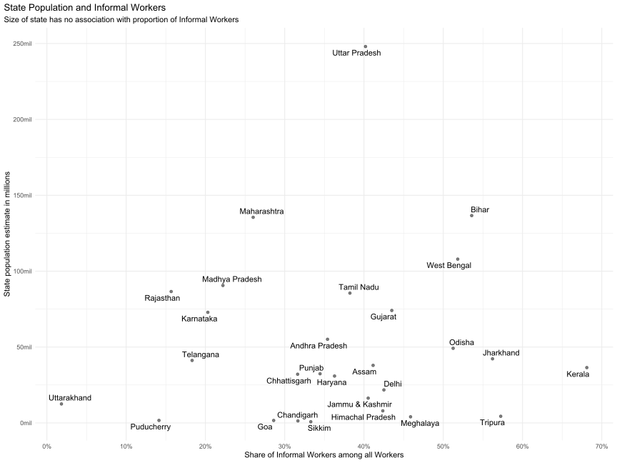
I was surprised to see Kerala on the right side of the plot. But again, this is the entire set of Informal workers.
| State | Number of Informal Workers | Share of Informal Workers in state population | Sahre of Informal Workers among all Workers |
|---|---|---|---|
| Andhra Pradesh | 6157763.79 | 0.111727139 | 0.35402378 |
| Assam | 6200759.63 | 0.163450930 | 0.41148996 |
| Bihar | 17819929.95 | 0.130429693 | 0.53586450 |
| Chandigarh | 109873.89 | 0.082788671 | 0.31666667 |
| Chhattisgarh | 3544988.79 | 0.110489602 | 0.31630149 |
| Delhi | 2745639.99 | 0.126252957 | 0.42511306 |
| Goa | 114036.51 | 0.069931682 | 0.28607582 |
| Gujarat | 12311981.68 | 0.166155143 | 0.43507783 |
| Haryana | 3179334.72 | 0.102912198 | 0.36285478 |
| Himachal Pradesh | 915344.86 | 0.115022352 | 0.42374728 |
| Jammu & Kashmir | 1775931.68 | 0.108711655 | 0.40530485 |
| Jharkhand | 6932097.62 | 0.164076491 | 0.56213730 |
| Karnataka | 4794872.34 | 0.065785495 | 0.20303157 |
| Kerala | 7293907.26 | 0.200064848 | 0.68108614 |
| Madhya Pradesh | 6836642.54 | 0.075473986 | 0.22206557 |
| Maharashtra | 13123639.84 | 0.096858323 | 0.26021544 |
| Meghalaya | 786897.90 | 0.194960613 | 0.45874715 |
| Odisha | 8163825.55 | 0.166014006 | 0.51244489 |
| Puducherry | 74077.02 | 0.044522343 | 0.14138716 |
| Punjab | 3791984.32 | 0.117076122 | 0.34457245 |
| Rajasthan | 3828561.56 | 0.044220430 | 0.15677963 |
| Sikkim | 90551.68 | 0.115727022 | 0.33289110 |
| Tamil Nadu | 10919493.97 | 0.127651316 | 0.38225287 |
| Telangana | 3094790.14 | 0.075133667 | 0.18316857 |
| Tripura | 902059.95 | 0.206225146 | 0.57248701 |
| Uttar Pradesh | 26932992.03 | 0.108590119 | 0.40194292 |
| Uttarakhand | 65126.74 | 0.005206124 | 0.01836101 |
| West Bengal | 20119251.26 | 0.186420220 | 0.51826269 |
Informal Workers and Region Type
Region type records if an individual is in Urban or Rural area.
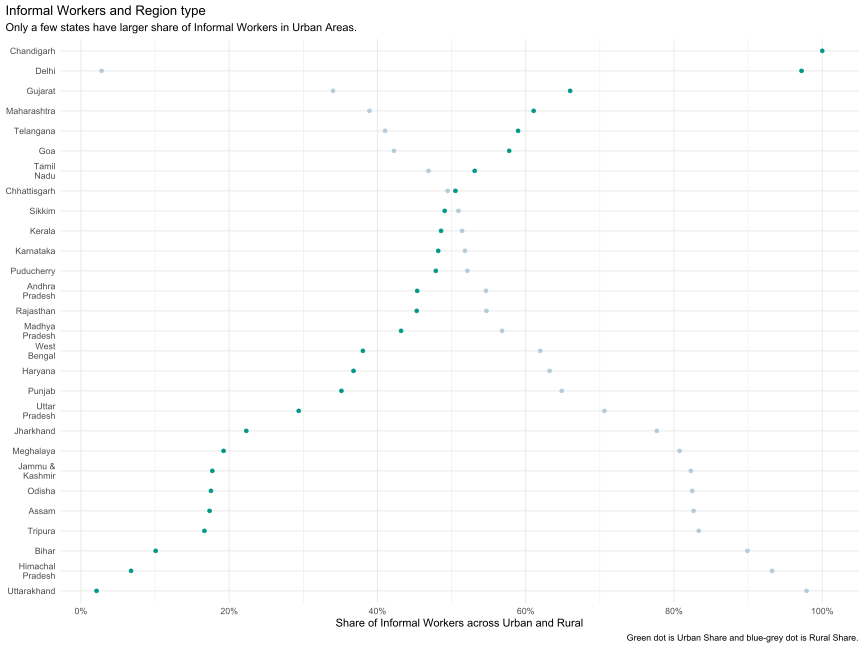
Chandigarh, Delhi, Gujarat, Maharashtra, Telangana, Tamil Nadu and, Goa are the only states where Urban Informal Workers are higher than Rural Informal Workers.
| STATE | RURAL | URBAN |
|---|---|---|
| Jammu & Kashmir | 0.82275650 | 0.17724350 |
| Himachal Pradesh | 0.93237480 | 0.06762520 |
| Chandigarh | NA | 1.00000000 |
| Punjab | 0.64860343 | 0.35139657 |
| Haryana | 0.63225070 | 0.36774930 |
| Delhi | 0.02789938 | 0.97210062 |
| Rajasthan | 0.54696791 | 0.45303209 |
| Uttar Pradesh | 0.70621535 | 0.29378465 |
| Uttarakhand | 0.97884961 | 0.02115039 |
| Gujarat | 0.34008369 | 0.65991631 |
| Maharashtra | 0.38927342 | 0.61072658 |
| Goa | 0.42228086 | 0.57771914 |
| Madhya Pradesh | 0.56813931 | 0.43186069 |
| Karnataka | 0.51805995 | 0.48194005 |
| Andhra Pradesh | 0.54640829 | 0.45359171 |
| Telangana | 0.41032694 | 0.58967306 |
| Tamil Nadu | 0.46877908 | 0.53122092 |
| Puducherry | 0.52125051 | 0.47874949 |
| Kerala | 0.51420315 | 0.48579685 |
| Assam | 0.82639863 | 0.17360137 |
| West Bengal | 0.61964690 | 0.38035310 |
| Bihar | 0.89912569 | 0.10087431 |
| Jharkhand | 0.77688279 | 0.22311721 |
| Odisha | 0.82458888 | 0.17541112 |
| Chhattisgarh | 0.49477405 | 0.50522595 |
| Sikkim | 0.50924938 | 0.49075062 |
| Tripura | 0.83343029 | 0.16656971 |
| Meghalaya | 0.80753757 | 0.19246243 |
Informal Workers and Gender
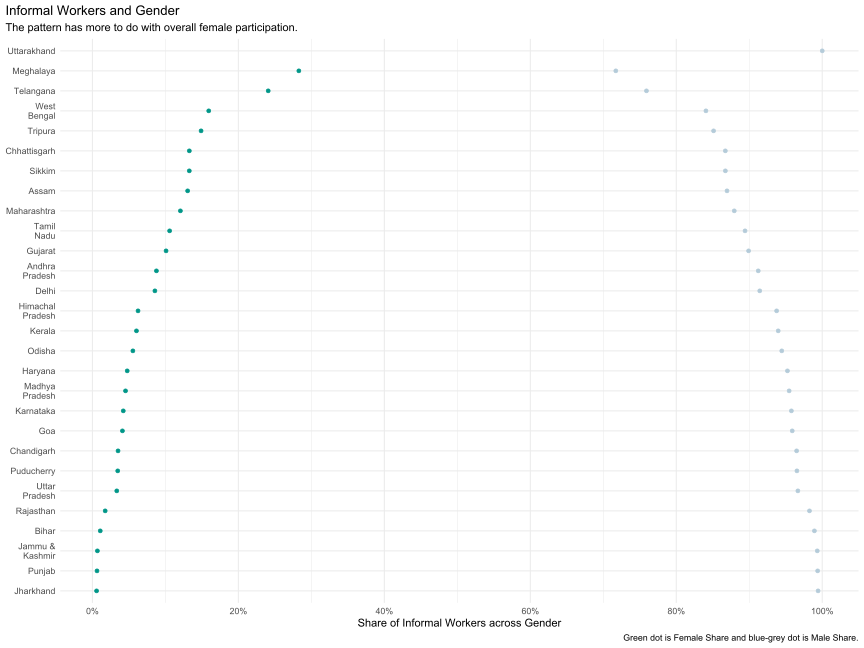
States in North East have higher FLFP, that is driving this pattern. No other thing to underline.
| STATE | F | M |
|---|---|---|
| Jammu & Kashmir | 0.006809550 | 0.9931904 |
| Himachal Pradesh | 0.062484225 | 0.9375158 |
| Chandigarh | 0.035087719 | 0.9649123 |
| Punjab | 0.006284257 | 0.9937157 |
| Haryana | 0.047668976 | 0.9523310 |
| Delhi | 0.085620241 | 0.9143798 |
| Rajasthan | 0.017476457 | 0.9825235 |
| Uttar Pradesh | 0.033376676 | 0.9666233 |
| Uttarakhand | NA | 1.0000000 |
| Gujarat | 0.100902663 | 0.8990973 |
| Maharashtra | 0.120539923 | 0.8794601 |
| Goa | 0.041116674 | 0.9588833 |
| Madhya Pradesh | 0.045360749 | 0.9546393 |
| Karnataka | 0.042273887 | 0.9577261 |
| Andhra Pradesh | 0.087701007 | 0.9122990 |
| Telangana | 0.240851331 | 0.7591487 |
| Tamil Nadu | 0.105787802 | 0.8942122 |
| Puducherry | 0.034681223 | 0.9653188 |
| Kerala | 0.060343296 | 0.9396567 |
| Assam | 0.130476730 | 0.8695233 |
| West Bengal | 0.159369341 | 0.8406307 |
| Bihar | 0.010725923 | 0.9892741 |
| Jharkhand | 0.005709844 | 0.9942902 |
| Odisha | 0.055443870 | 0.9445561 |
| Chhattisgarh | 0.132780295 | 0.8672197 |
| Sikkim | 0.132729167 | 0.8672708 |
| Tripura | 0.148874044 | 0.8511260 |
| Meghalaya | 0.282847999 | 0.7171520 |
Target Group and Gender
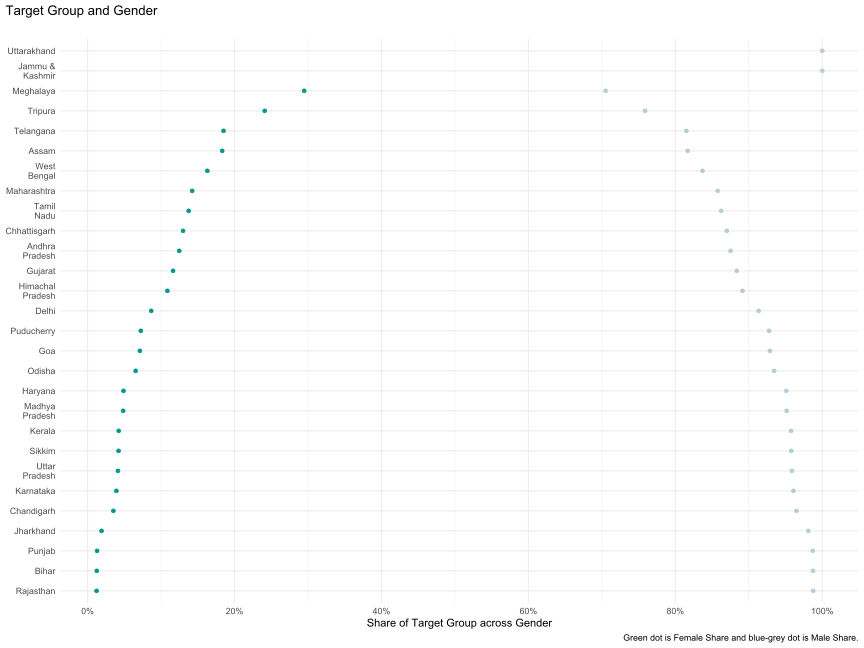
| STATE | M | F |
|---|---|---|
| Jammu & Kashmir | 1.0000000 | NA |
| Himachal Pradesh | 0.8914047 | 0.10859531 |
| Chandigarh | 0.9649123 | 0.03508772 |
| Punjab | 0.9870792 | 0.01292083 |
| Haryana | 0.9511049 | 0.04889514 |
| Delhi | 0.9134396 | 0.08656036 |
| Rajasthan | 0.9877524 | 0.01224761 |
| Uttar Pradesh | 0.9586847 | 0.04131532 |
| Uttarakhand | 1.0000000 | NA |
| Gujarat | 0.8836661 | 0.11633390 |
| Maharashtra | 0.8577114 | 0.14228856 |
| Goa | 0.9288293 | 0.07117070 |
| Madhya Pradesh | 0.9515724 | 0.04842763 |
| Karnataka | 0.9608411 | 0.03915888 |
| Andhra Pradesh | 0.8752815 | 0.12471851 |
| Telangana | 0.8149372 | 0.18506276 |
| Tamil Nadu | 0.8624213 | 0.13757872 |
| Puducherry | 0.9275587 | 0.07244128 |
| Kerala | 0.9576286 | 0.04237142 |
| Assam | 0.8168087 | 0.18319133 |
| West Bengal | 0.8370332 | 0.16296678 |
| Bihar | 0.9874532 | 0.01254679 |
| Jharkhand | 0.9810080 | 0.01899204 |
| Odisha | 0.9345426 | 0.06545744 |
| Chhattisgarh | 0.8700733 | 0.12992672 |
| Sikkim | 0.9578313 | 0.04216867 |
| Tripura | 0.7588652 | 0.24113475 |
| Meghalaya | 0.7052023 | 0.29479769 |
Target Group and Caste Category
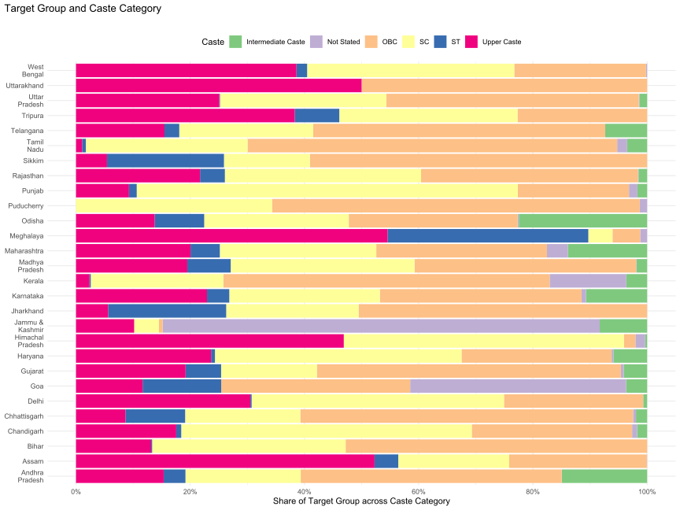
| STATE | CASTE_CATEGORY | prop_of_tg_in_castecategory_in_urban |
|---|---|---|
| Jammu & Kashmir | Intermediate Caste | 0.0830110041 |
| Jammu & Kashmir | Not Stated | 0.7652301186 |
| Jammu & Kashmir | OBC | 0.0066307763 |
| Jammu & Kashmir | SC | 0.0433697169 |
| Jammu & Kashmir | Upper Caste | 0.1017583841 |
| Himachal Pradesh | Intermediate Caste | 0.0034130056 |
| Himachal Pradesh | Not Stated | 0.0170650281 |
| Himachal Pradesh | OBC | 0.0198571646 |
| Himachal Pradesh | SC | 0.4908483909 |
| Himachal Pradesh | Upper Caste | 0.4688164107 |
| Chandigarh | Intermediate Caste | 0.0175438596 |
| Chandigarh | Not Stated | 0.0087719298 |
| Chandigarh | OBC | 0.2807017544 |
| Chandigarh | SC | 0.5087719298 |
| Chandigarh | ST | 0.0087719298 |
| Chandigarh | Upper Caste | 0.1754385965 |
| Punjab | Intermediate Caste | 0.0170295886 |
| Punjab | Not Stated | 0.0147326166 |
| Punjab | OBC | 0.1946656631 |
| Punjab | SC | 0.6672863730 |
| Punjab | ST | 0.0135841174 |
| Punjab | Upper Caste | 0.0927016413 |
| Haryana | Intermediate Caste | 0.0590226336 |
| Haryana | Not Stated | 0.0031607029 |
| Haryana | OBC | 0.2627812428 |
| Haryana | SC | 0.4317576966 |
| Haryana | ST | 0.0068439021 |
| Haryana | Upper Caste | 0.2364338220 |
| Delhi | Intermediate Caste | 0.0068337130 |
| Delhi | OBC | 0.2437357631 |
| Delhi | SC | 0.4419134396 |
| Delhi | ST | 0.0022779043 |
| Delhi | Upper Caste | 0.3052391800 |
| Rajasthan | Intermediate Caste | 0.0151484170 |
| Rajasthan | Not Stated | 0.0009615528 |
| Rajasthan | OBC | 0.3797477912 |
| Rajasthan | SC | 0.3435167044 |
| Rajasthan | ST | 0.0434632110 |
| Rajasthan | Upper Caste | 0.2171623236 |
| Uttar Pradesh | Intermediate Caste | 0.0136037133 |
| Uttar Pradesh | Not Stated | 0.0009428987 |
| Uttar Pradesh | OBC | 0.4422708270 |
| Uttar Pradesh | SC | 0.2911028788 |
| Uttar Pradesh | ST | 0.0012733766 |
| Uttar Pradesh | Upper Caste | 0.2508063055 |
| Uttarakhand | OBC | 0.5000000000 |
| Uttarakhand | Upper Caste | 0.5000000000 |
| Gujarat | Intermediate Caste | 0.0409411740 |
| Gujarat | Not Stated | 0.0049267136 |
| Gujarat | OBC | 0.5323688098 |
| Gujarat | SC | 0.1677075339 |
| Gujarat | ST | 0.0622455296 |
| Gujarat | Upper Caste | 0.1918102392 |
| Maharashtra | Intermediate Caste | 0.1388355471 |
| Maharashtra | Not Stated | 0.0365404206 |
| Maharashtra | OBC | 0.2988814641 |
| Maharashtra | SC | 0.2739492322 |
| Maharashtra | ST | 0.0512640532 |
| Maharashtra | Upper Caste | 0.2005292827 |
| Goa | Intermediate Caste | 0.0368529927 |
| Goa | Not Stated | 0.3780829171 |
| Goa | OBC | 0.3308960725 |
| Goa | ST | 0.1375649008 |
| Goa | Upper Caste | 0.1166031169 |
| Madhya Pradesh | Intermediate Caste | 0.0185604921 |
| Madhya Pradesh | Not Stated | 0.0007912085 |
| Madhya Pradesh | OBC | 0.3878951266 |
| Madhya Pradesh | SC | 0.3218772410 |
| Madhya Pradesh | ST | 0.0760584713 |
| Madhya Pradesh | Upper Caste | 0.1948174604 |
| Karnataka | Intermediate Caste | 0.1071818732 |
| Karnataka | Not Stated | 0.0076462364 |
| Karnataka | OBC | 0.3531220921 |
| Karnataka | SC | 0.2637101090 |
| Karnataka | ST | 0.0390285492 |
| Karnataka | Upper Caste | 0.2293111401 |
| Andhra Pradesh | Intermediate Caste | 0.1492192761 |
| Andhra Pradesh | Not Stated | 0.0003216493 |
| Andhra Pradesh | OBC | 0.4569995798 |
| Andhra Pradesh | SC | 0.2018691927 |
| Andhra Pradesh | ST | 0.0381332225 |
| Andhra Pradesh | Upper Caste | 0.1534570796 |
| Telangana | Intermediate Caste | 0.0734306194 |
| Telangana | OBC | 0.5113473336 |
| Telangana | SC | 0.2344627354 |
| Telangana | ST | 0.0258601216 |
| Telangana | Upper Caste | 0.1548991899 |
| Tamil Nadu | Intermediate Caste | 0.0350285675 |
| Tamil Nadu | Not Stated | 0.0174589680 |
| Tamil Nadu | OBC | 0.6470535755 |
| Tamil Nadu | SC | 0.2832062026 |
| Tamil Nadu | ST | 0.0065329679 |
| Tamil Nadu | Upper Caste | 0.0107197185 |
| Puducherry | Not Stated | 0.0129372493 |
| Puducherry | OBC | 0.6438061752 |
| Puducherry | SC | 0.3432565754 |
| Kerala | Intermediate Caste | 0.0364308316 |
| Kerala | Not Stated | 0.1342363673 |
| Kerala | OBC | 0.5714231457 |
| Kerala | SC | 0.2320818823 |
| Kerala | ST | 0.0024055498 |
| Kerala | Upper Caste | 0.0234222233 |
| Assam | Not Stated | 0.0004237084 |
| Assam | OBC | 0.2410594606 |
| Assam | SC | 0.1942775329 |
| Assam | ST | 0.0415514314 |
| Assam | Upper Caste | 0.5226878667 |
| West Bengal | Not Stated | 0.0019344392 |
| West Bengal | OBC | 0.2306713562 |
| West Bengal | SC | 0.3627320158 |
| West Bengal | ST | 0.0186817435 |
| West Bengal | Upper Caste | 0.3859804453 |
| Bihar | OBC | 0.5279003660 |
| Bihar | SC | 0.3387923544 |
| Bihar | ST | 0.0017560155 |
| Bihar | Upper Caste | 0.1315512642 |
| Jharkhand | OBC | 0.5051271762 |
| Jharkhand | SC | 0.2319359027 |
| Jharkhand | ST | 0.2067181572 |
| Jharkhand | Upper Caste | 0.0562187639 |
| Odisha | Intermediate Caste | 0.2246683346 |
| Odisha | Not Stated | 0.0020629700 |
| Odisha | OBC | 0.2956562295 |
| Odisha | SC | 0.2532190752 |
| Odisha | ST | 0.0867308065 |
| Odisha | Upper Caste | 0.1376625841 |
| Chhattisgarh | Intermediate Caste | 0.0195408645 |
| Chhattisgarh | Not Stated | 0.0049879150 |
| Chhattisgarh | OBC | 0.5827505182 |
| Chhattisgarh | SC | 0.2016440366 |
| Chhattisgarh | ST | 0.1045514091 |
| Chhattisgarh | Upper Caste | 0.0865252566 |
| Sikkim | OBC | 0.5903614458 |
| Sikkim | SC | 0.1506024096 |
| Sikkim | ST | 0.2048192771 |
| Sikkim | Upper Caste | 0.0542168675 |
| Tripura | OBC | 0.2269503546 |
| Tripura | SC | 0.3120567376 |
| Tripura | ST | 0.0780141844 |
| Tripura | Upper Caste | 0.3829787234 |
| Meghalaya | Not Applicable | 0.0462427746 |
| Meghalaya | Not Stated | 0.0115606936 |
| Meghalaya | OBC | 0.0462427746 |
| Meghalaya | SC | 0.0404624277 |
| Meghalaya | ST | 0.3352601156 |
| Meghalaya | Upper Caste | 0.5202312139 |
Employment Arrangement
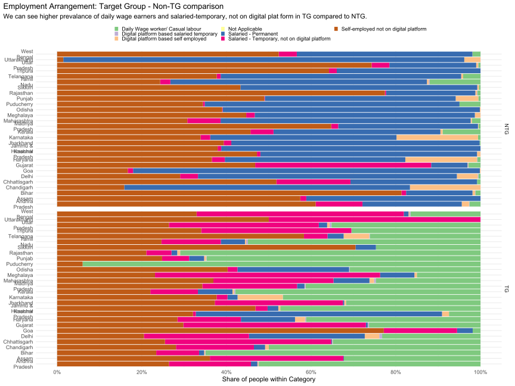
| STATE | EMPLOYMENT_ARRANGEMENT | Share of Employment Arrangement | TG or NTG |
|---|---|---|---|
| Jammu & Kashmir | Daily Wage worker/ Casual labour | 4.729273e-01 | 1 |
| Jammu & Kashmir | Digital platform based self employed | 4.611722e-03 | 1 |
| Jammu & Kashmir | Salaried - Permanent | 2.530482e-02 | 1 |
| Jammu & Kashmir | Salaried - Temporary, not on digital platform | 2.868400e-02 | 1 |
| Jammu & Kashmir | Self-employed not on digital platform | 4.684722e-01 | 1 |
| Himachal Pradesh | Daily Wage worker/ Casual labour | 7.446525e-02 | 1 |
| Himachal Pradesh | Digital platform based self employed | 1.644416e-02 | 1 |
| Himachal Pradesh | Salaried - Permanent | 5.814456e-01 | 1 |
| Himachal Pradesh | Salaried - Temporary, not on digital platform | 6.826011e-03 | 1 |
| Himachal Pradesh | Self-employed not on digital platform | 3.208190e-01 | 1 |
| Chandigarh | Daily Wage worker/ Casual labour | 5.000000e-01 | 1 |
| Chandigarh | Digital platform based self employed | 8.771930e-03 | 1 |
| Chandigarh | Salaried - Permanent | 2.631579e-02 | 1 |
| Chandigarh | Salaried - Temporary, not on digital platform | 1.842105e-01 | 1 |
| Chandigarh | Self-employed not on digital platform | 2.807018e-01 | 1 |
| Punjab | Daily Wage worker/ Casual labour | 6.470554e-01 | 1 |
| Punjab | Digital platform based salaried temporary | 1.453694e-03 | 1 |
| Punjab | Digital platform based self employed | 4.332856e-03 | 1 |
| Punjab | Not Applicable | 0.000000e+00 | 1 |
| Punjab | Salaried - Permanent | 3.531649e-02 | 1 |
| Punjab | Salaried - Temporary, not on digital platform | 6.392813e-02 | 1 |
| Punjab | Self-employed not on digital platform | 2.479134e-01 | 1 |
| Haryana | Daily Wage worker/ Casual labour | 4.120993e-01 | 1 |
| Haryana | Digital platform based salaried temporary | 2.289427e-03 | 1 |
| Haryana | Digital platform based self employed | 2.368850e-02 | 1 |
| Haryana | Not Applicable | 0.000000e+00 | 1 |
| Haryana | Salaried - Permanent | 1.277846e-01 | 1 |
| Haryana | Salaried - Temporary, not on digital platform | 1.499020e-01 | 1 |
| Haryana | Self-employed not on digital platform | 2.842361e-01 | 1 |
| Delhi | Daily Wage worker/ Casual labour | 2.323462e-01 | 1 |
| Delhi | Digital platform based salaried temporary | 6.833713e-03 | 1 |
| Delhi | Digital platform based self employed | 3.416856e-02 | 1 |
| Delhi | Not Applicable | 0.000000e+00 | 1 |
| Delhi | Salaried - Permanent | 2.733485e-01 | 1 |
| Delhi | Salaried - Temporary, not on digital platform | 2.482916e-01 | 1 |
| Delhi | Self-employed not on digital platform | 2.050114e-01 | 1 |
| Rajasthan | Daily Wage worker/ Casual labour | 7.093510e-01 | 1 |
| Rajasthan | Digital platform based salaried temporary | 1.323533e-04 | 1 |
| Rajasthan | Digital platform based self employed | 6.821126e-03 | 1 |
| Rajasthan | Not Applicable | 0.000000e+00 | 1 |
| Rajasthan | Salaried - Permanent | 1.355685e-02 | 1 |
| Rajasthan | Salaried - Temporary, not on digital platform | 5.950338e-02 | 1 |
| Rajasthan | Self-employed not on digital platform | 2.106353e-01 | 1 |
| Uttar Pradesh | Daily Wage worker/ Casual labour | 3.517811e-01 | 1 |
| Uttar Pradesh | Digital platform based salaried temporary | 4.696655e-03 | 1 |
| Uttar Pradesh | Digital platform based self employed | 5.729563e-03 | 1 |
| Uttar Pradesh | Not Applicable | 0.000000e+00 | 1 |
| Uttar Pradesh | Salaried - Permanent | 1.965530e-02 | 1 |
| Uttar Pradesh | Salaried - Temporary, not on digital platform | 3.540775e-01 | 1 |
| Uttar Pradesh | Self-employed not on digital platform | 2.640599e-01 | 1 |
| Uttarakhand | Salaried - Temporary, not on digital platform | 5.000000e-01 | 1 |
| Uttarakhand | Self-employed not on digital platform | 5.000000e-01 | 1 |
| Gujarat | Daily Wage worker/ Casual labour | 2.632880e-01 | 1 |
| Gujarat | Digital platform based salaried temporary | 2.859422e-03 | 1 |
| Gujarat | Digital platform based self employed | 2.611280e-04 | 1 |
| Gujarat | Not Applicable | 0.000000e+00 | 1 |
| Gujarat | Salaried - Permanent | 4.316035e-03 | 1 |
| Gujarat | Salaried - Temporary, not on digital platform | 4.311275e-01 | 1 |
| Gujarat | Self-employed not on digital platform | 2.981479e-01 | 1 |
| Maharashtra | Daily Wage worker/ Casual labour | 2.472934e-01 | 1 |
| Maharashtra | Digital platform based salaried temporary | 4.175700e-03 | 1 |
| Maharashtra | Digital platform based self employed | 1.079672e-02 | 1 |
| Maharashtra | Not Applicable | 0.000000e+00 | 1 |
| Maharashtra | Salaried - Permanent | 8.488887e-02 | 1 |
| Maharashtra | Salaried - Temporary, not on digital platform | 2.837060e-01 | 1 |
| Maharashtra | Self-employed not on digital platform | 3.691393e-01 | 1 |
| Goa | Daily Wage worker/ Casual labour | 1.842650e-02 | 1 |
| Goa | Salaried - Permanent | 3.685299e-02 | 1 |
| Goa | Salaried - Temporary, not on digital platform | 1.731502e-01 | 1 |
| Goa | Self-employed not on digital platform | 7.715703e-01 | 1 |
| Madhya Pradesh | Daily Wage worker/ Casual labour | 4.127644e-01 | 1 |
| Madhya Pradesh | Digital platform based salaried temporary | 2.349474e-03 | 1 |
| Madhya Pradesh | Digital platform based self employed | 5.530053e-04 | 1 |
| Madhya Pradesh | Not Applicable | 0.000000e+00 | 1 |
| Madhya Pradesh | Salaried - Permanent | 1.752498e-02 | 1 |
| Madhya Pradesh | Salaried - Temporary, not on digital platform | 2.238090e-01 | 1 |
| Madhya Pradesh | Self-employed not on digital platform | 3.429991e-01 | 1 |
| Karnataka | Daily Wage worker/ Casual labour | 4.668566e-01 | 1 |
| Karnataka | Digital platform based salaried temporary | 2.111098e-04 | 1 |
| Karnataka | Digital platform based self employed | 1.067504e-01 | 1 |
| Karnataka | Salaried - Permanent | 2.372055e-02 | 1 |
| Karnataka | Salaried - Temporary, not on digital platform | 2.579049e-02 | 1 |
| Karnataka | Self-employed not on digital platform | 3.766708e-01 | 1 |
| Andhra Pradesh | Daily Wage worker/ Casual labour | 5.236369e-01 | 1 |
| Andhra Pradesh | Digital platform based salaried temporary | 1.247170e-03 | 1 |
| Andhra Pradesh | Digital platform based self employed | 2.082722e-03 | 1 |
| Andhra Pradesh | Not Applicable | 0.000000e+00 | 1 |
| Andhra Pradesh | Salaried - Permanent | 1.515979e-02 | 1 |
| Andhra Pradesh | Salaried - Temporary, not on digital platform | 1.936982e-01 | 1 |
| Andhra Pradesh | Self-employed not on digital platform | 2.641752e-01 | 1 |
| Telangana | Daily Wage worker/ Casual labour | 2.614596e-01 | 1 |
| Telangana | Digital platform based salaried temporary | 1.417216e-03 | 1 |
| Telangana | Digital platform based self employed | 6.035380e-02 | 1 |
| Telangana | Salaried - Permanent | 3.798216e-02 | 1 |
| Telangana | Salaried - Temporary, not on digital platform | 5.575475e-02 | 1 |
| Telangana | Self-employed not on digital platform | 5.830325e-01 | 1 |
| Tamil Nadu | Daily Wage worker/ Casual labour | 5.491855e-01 | 1 |
| Tamil Nadu | Digital platform based salaried temporary | 4.184922e-03 | 1 |
| Tamil Nadu | Digital platform based self employed | 2.977407e-03 | 1 |
| Tamil Nadu | Not Applicable | 0.000000e+00 | 1 |
| Tamil Nadu | Salaried - Permanent | 5.686869e-02 | 1 |
| Tamil Nadu | Salaried - Temporary, not on digital platform | 1.403697e-01 | 1 |
| Tamil Nadu | Self-employed not on digital platform | 2.464137e-01 | 1 |
| Puducherry | Daily Wage worker/ Casual labour | 9.397707e-01 | 1 |
| Puducherry | Self-employed not on digital platform | 6.022934e-02 | 1 |
| Kerala | Daily Wage worker/ Casual labour | 5.793341e-01 | 1 |
| Kerala | Digital platform based salaried temporary | 2.881053e-03 | 1 |
| Kerala | Digital platform based self employed | 3.638717e-03 | 1 |
| Kerala | Not Applicable | 0.000000e+00 | 1 |
| Kerala | Salaried - Permanent | 8.156287e-02 | 1 |
| Kerala | Salaried - Temporary, not on digital platform | 1.124423e-01 | 1 |
| Kerala | Self-employed not on digital platform | 2.201409e-01 | 1 |
| Assam | Daily Wage worker/ Casual labour | 3.225342e-01 | 1 |
| Assam | Salaried - Permanent | 1.271125e-03 | 1 |
| Assam | Salaried - Temporary, not on digital platform | 3.153342e-01 | 1 |
| Assam | Self-employed not on digital platform | 3.608605e-01 | 1 |
| West Bengal | Daily Wage worker/ Casual labour | 1.654358e-01 | 1 |
| West Bengal | Digital platform based salaried temporary | 2.166214e-03 | 1 |
| West Bengal | Digital platform based self employed | 2.370408e-03 | 1 |
| West Bengal | Not Applicable | 0.000000e+00 | 1 |
| West Bengal | Salaried - Permanent | 1.121468e-02 | 1 |
| West Bengal | Salaried - Temporary, not on digital platform | 4.894124e-01 | 1 |
| West Bengal | Self-employed not on digital platform | 3.294005e-01 | 1 |
| Bihar | Daily Wage worker/ Casual labour | 6.495158e-01 | 1 |
| Bihar | Digital platform based salaried temporary | 9.001234e-04 | 1 |
| Bihar | Digital platform based self employed | 2.354140e-03 | 1 |
| Bihar | Not Applicable | 0.000000e+00 | 1 |
| Bihar | Salaried - Permanent | 1.194838e-02 | 1 |
| Bihar | Salaried - Temporary, not on digital platform | 1.011672e-01 | 1 |
| Bihar | Self-employed not on digital platform | 2.341144e-01 | 1 |
| Jharkhand | Daily Wage worker/ Casual labour | 3.177139e-01 | 1 |
| Jharkhand | Digital platform based self employed | 4.112276e-03 | 1 |
| Jharkhand | Salaried - Permanent | 3.182444e-03 | 1 |
| Jharkhand | Salaried - Temporary, not on digital platform | 3.026349e-01 | 1 |
| Jharkhand | Self-employed not on digital platform | 3.723564e-01 | 1 |
| Odisha | Daily Wage worker/ Casual labour | 3.090251e-01 | 1 |
| Odisha | Digital platform based salaried temporary | 1.354809e-03 | 1 |
| Odisha | Not Applicable | 0.000000e+00 | 1 |
| Odisha | Salaried - Permanent | 2.636448e-01 | 1 |
| Odisha | Salaried - Temporary, not on digital platform | 2.328180e-02 | 1 |
| Odisha | Self-employed not on digital platform | 4.026935e-01 | 1 |
| Chhattisgarh | Daily Wage worker/ Casual labour | 3.488683e-01 | 1 |
| Chhattisgarh | Digital platform based salaried temporary | 1.062893e-03 | 1 |
| Chhattisgarh | Digital platform based self employed | 6.524086e-04 | 1 |
| Chhattisgarh | Salaried - Permanent | 1.906165e-03 | 1 |
| Chhattisgarh | Salaried - Temporary, not on digital platform | 3.928333e-01 | 1 |
| Chhattisgarh | Self-employed not on digital platform | 2.546769e-01 | 1 |
| Sikkim | Daily Wage worker/ Casual labour | 2.469880e-01 | 1 |
| Sikkim | Not Applicable | 0.000000e+00 | 1 |
| Sikkim | Salaried - Permanent | 4.819277e-02 | 1 |
| Sikkim | Self-employed not on digital platform | 7.048193e-01 | 1 |
| Tripura | Daily Wage worker/ Casual labour | 3.049645e-01 | 1 |
| Tripura | Salaried - Temporary, not on digital platform | 3.546099e-01 | 1 |
| Tripura | Self-employed not on digital platform | 3.404255e-01 | 1 |
| Meghalaya | Daily Wage worker/ Casual labour | 1.502890e-01 | 1 |
| Meghalaya | Digital platform based self employed | 5.780347e-03 | 1 |
| Meghalaya | Not Applicable | 0.000000e+00 | 1 |
| Meghalaya | Salaried - Permanent | 8.092486e-02 | 1 |
| Meghalaya | Salaried - Temporary, not on digital platform | 5.317919e-01 | 1 |
| Meghalaya | Self-employed not on digital platform | 2.312139e-01 | 1 |
| Jammu & Kashmir | Salaried - Permanent | 6.123682e-01 | 0 |
| Jammu & Kashmir | Salaried - Temporary, not on digital platform | 8.478828e-03 | 0 |
| Jammu & Kashmir | Self-employed not on digital platform | 3.791529e-01 | 0 |
| Himachal Pradesh | Digital platform based self employed | 8.130024e-03 | 0 |
| Himachal Pradesh | Not Applicable | 0.000000e+00 | 0 |
| Himachal Pradesh | Salaried - Permanent | 5.117355e-01 | 0 |
| Himachal Pradesh | Salaried - Temporary, not on digital platform | 8.130024e-03 | 0 |
| Himachal Pradesh | Self-employed not on digital platform | 4.720045e-01 | 0 |
| Chandigarh | Digital platform based self employed | 1.666667e-01 | 0 |
| Chandigarh | Not Applicable | 0.000000e+00 | 0 |
| Chandigarh | Salaried - Permanent | 6.747967e-01 | 0 |
| Chandigarh | Self-employed not on digital platform | 1.585366e-01 | 0 |
| Punjab | Daily Wage worker/ Casual labour | 5.068648e-03 | 0 |
| Punjab | Digital platform based self employed | 5.346193e-02 | 0 |
| Punjab | Not Applicable | 0.000000e+00 | 0 |
| Punjab | Salaried - Permanent | 4.507465e-01 | 0 |
| Punjab | Salaried - Temporary, not on digital platform | 1.348422e-03 | 0 |
| Punjab | Self-employed not on digital platform | 4.893745e-01 | 0 |
| Haryana | Daily Wage worker/ Casual labour | 7.341552e-03 | 0 |
| Haryana | Digital platform based salaried temporary | 9.197798e-04 | 0 |
| Haryana | Digital platform based self employed | 1.692730e-01 | 0 |
| Haryana | Not Applicable | 0.000000e+00 | 0 |
| Haryana | Salaried - Permanent | 4.263352e-01 | 0 |
| Haryana | Salaried - Temporary, not on digital platform | 3.065326e-02 | 0 |
| Haryana | Self-employed not on digital platform | 3.654773e-01 | 0 |
| Delhi | Daily Wage worker/ Casual labour | 5.067568e-03 | 0 |
| Delhi | Digital platform based salaried temporary | 1.689189e-03 | 0 |
| Delhi | Digital platform based self employed | 4.898649e-02 | 0 |
| Delhi | Not Applicable | 0.000000e+00 | 0 |
| Delhi | Salaried - Permanent | 6.114865e-01 | 0 |
| Delhi | Salaried - Temporary, not on digital platform | 4.222973e-02 | 0 |
| Delhi | Self-employed not on digital platform | 2.905405e-01 | 0 |
| Rajasthan | Daily Wage worker/ Casual labour | 7.066628e-03 | 0 |
| Rajasthan | Digital platform based salaried temporary | 1.244215e-03 | 0 |
| Rajasthan | Digital platform based self employed | 3.844921e-03 | 0 |
| Rajasthan | Not Applicable | 0.000000e+00 | 0 |
| Rajasthan | Salaried - Permanent | 2.108680e-01 | 0 |
| Rajasthan | Salaried - Temporary, not on digital platform | 2.931193e-03 | 0 |
| Rajasthan | Self-employed not on digital platform | 7.740450e-01 | 0 |
| Uttar Pradesh | Daily Wage worker/ Casual labour | 5.117117e-03 | 0 |
| Uttar Pradesh | Digital platform based salaried temporary | 8.268433e-04 | 0 |
| Uttar Pradesh | Digital platform based self employed | 4.219103e-03 | 0 |
| Uttar Pradesh | Not Applicable | 0.000000e+00 | 0 |
| Uttar Pradesh | Salaried - Permanent | 2.050203e-01 | 0 |
| Uttar Pradesh | Salaried - Temporary, not on digital platform | 4.200110e-02 | 0 |
| Uttar Pradesh | Self-employed not on digital platform | 7.428155e-01 | 0 |
| Uttarakhand | Digital platform based self employed | 3.831582e-02 | 0 |
| Uttarakhand | Salaried - Permanent | 9.470497e-01 | 0 |
| Uttarakhand | Self-employed not on digital platform | 1.463443e-02 | 0 |
| Gujarat | Daily Wage worker/ Casual labour | 2.821090e-02 | 0 |
| Gujarat | Digital platform based salaried temporary | 1.112168e-03 | 0 |
| Gujarat | Digital platform based self employed | 1.308940e-03 | 0 |
| Gujarat | Not Applicable | 0.000000e+00 | 0 |
| Gujarat | Salaried - Permanent | 8.590909e-02 | 0 |
| Gujarat | Salaried - Temporary, not on digital platform | 4.156419e-01 | 0 |
| Gujarat | Self-employed not on digital platform | 4.678170e-01 | 0 |
| Maharashtra | Daily Wage worker/ Casual labour | 2.032070e-02 | 0 |
| Maharashtra | Digital platform based salaried temporary | 1.598332e-04 | 0 |
| Maharashtra | Digital platform based self employed | 2.707562e-03 | 0 |
| Maharashtra | Not Applicable | 0.000000e+00 | 0 |
| Maharashtra | Salaried - Permanent | 5.906394e-01 | 0 |
| Maharashtra | Salaried - Temporary, not on digital platform | 7.866994e-02 | 0 |
| Maharashtra | Self-employed not on digital platform | 3.075026e-01 | 0 |
| Goa | Digital platform based self employed | 1.521528e-03 | 0 |
| Goa | Not Applicable | 0.000000e+00 | 0 |
| Goa | Salaried - Permanent | 8.190749e-01 | 0 |
| Goa | Salaried - Temporary, not on digital platform | 1.262185e-02 | 0 |
| Goa | Self-employed not on digital platform | 1.667818e-01 | 0 |
| Madhya Pradesh | Daily Wage worker/ Casual labour | 4.345874e-03 | 0 |
| Madhya Pradesh | Digital platform based salaried temporary | 4.402228e-04 | 0 |
| Madhya Pradesh | Digital platform based self employed | 1.191542e-03 | 0 |
| Madhya Pradesh | Not Applicable | 0.000000e+00 | 0 |
| Madhya Pradesh | Salaried - Permanent | 3.300171e-01 | 0 |
| Madhya Pradesh | Salaried - Temporary, not on digital platform | 1.662742e-02 | 0 |
| Madhya Pradesh | Self-employed not on digital platform | 6.473778e-01 | 0 |
| Karnataka | Daily Wage worker/ Casual labour | 5.890557e-03 | 0 |
| Karnataka | Digital platform based salaried temporary | 6.837579e-05 | 0 |
| Karnataka | Digital platform based self employed | 1.923805e-01 | 0 |
| Karnataka | Not Applicable | 0.000000e+00 | 0 |
| Karnataka | Salaried - Permanent | 4.400654e-01 | 0 |
| Karnataka | Salaried - Temporary, not on digital platform | 2.287452e-02 | 0 |
| Karnataka | Self-employed not on digital platform | 3.387206e-01 | 0 |
| Andhra Pradesh | Daily Wage worker/ Casual labour | 2.595460e-02 | 0 |
| Andhra Pradesh | Digital platform based salaried temporary | 1.142154e-03 | 0 |
| Andhra Pradesh | Digital platform based self employed | 1.715125e-02 | 0 |
| Andhra Pradesh | Not Applicable | 0.000000e+00 | 0 |
| Andhra Pradesh | Salaried - Permanent | 2.345034e-01 | 0 |
| Andhra Pradesh | Salaried - Temporary, not on digital platform | 1.106276e-01 | 0 |
| Andhra Pradesh | Self-employed not on digital platform | 6.106210e-01 | 0 |
| Telangana | Daily Wage worker/ Casual labour | 4.099112e-02 | 0 |
| Telangana | Digital platform based self employed | 4.654600e-03 | 0 |
| Telangana | Salaried - Permanent | 5.680239e-01 | 0 |
| Telangana | Salaried - Temporary, not on digital platform | 9.353922e-03 | 0 |
| Telangana | Self-employed not on digital platform | 3.769765e-01 | 0 |
| Tamil Nadu | Daily Wage worker/ Casual labour | 1.198353e-01 | 0 |
| Tamil Nadu | Digital platform based salaried temporary | 2.500291e-03 | 0 |
| Tamil Nadu | Digital platform based self employed | 4.159310e-03 | 0 |
| Tamil Nadu | Not Applicable | 0.000000e+00 | 0 |
| Tamil Nadu | Salaried - Permanent | 6.060063e-01 | 0 |
| Tamil Nadu | Salaried - Temporary, not on digital platform | 2.427005e-02 | 0 |
| Tamil Nadu | Self-employed not on digital platform | 2.432287e-01 | 0 |
| Puducherry | Daily Wage worker/ Casual labour | 4.961207e-02 | 0 |
| Puducherry | Salaried - Permanent | 6.017086e-01 | 0 |
| Puducherry | Salaried - Temporary, not on digital platform | 4.295054e-03 | 0 |
| Puducherry | Self-employed not on digital platform | 3.443843e-01 | 0 |
| Kerala | Daily Wage worker/ Casual labour | 8.952670e-02 | 0 |
| Kerala | Digital platform based self employed | 5.185123e-03 | 0 |
| Kerala | Not Applicable | 0.000000e+00 | 0 |
| Kerala | Salaried - Permanent | 3.941845e-01 | 0 |
| Kerala | Salaried - Temporary, not on digital platform | 5.443284e-02 | 0 |
| Kerala | Self-employed not on digital platform | 4.566709e-01 | 0 |
| Assam | Not Applicable | 0.000000e+00 | 0 |
| Assam | Salaried - Permanent | 4.113986e-01 | 0 |
| Assam | Salaried - Temporary, not on digital platform | 1.422807e-02 | 0 |
| Assam | Self-employed not on digital platform | 5.743734e-01 | 0 |
| West Bengal | Daily Wage worker/ Casual labour | 1.840664e-02 | 0 |
| West Bengal | Digital platform based self employed | 5.963805e-04 | 0 |
| West Bengal | Not Applicable | 0.000000e+00 | 0 |
| West Bengal | Salaried - Permanent | 4.148612e-01 | 0 |
| West Bengal | Salaried - Temporary, not on digital platform | 4.271930e-02 | 0 |
| West Bengal | Self-employed not on digital platform | 5.234165e-01 | 0 |
| Bihar | Daily Wage worker/ Casual labour | 1.212059e-02 | 0 |
| Bihar | Digital platform based salaried temporary | 7.018149e-04 | 0 |
| Bihar | Digital platform based self employed | 6.071703e-03 | 0 |
| Bihar | Not Applicable | 0.000000e+00 | 0 |
| Bihar | Salaried - Permanent | 1.568850e-01 | 0 |
| Bihar | Salaried - Temporary, not on digital platform | 1.090763e-02 | 0 |
| Bihar | Self-employed not on digital platform | 8.133132e-01 | 0 |
| Jharkhand | Daily Wage worker/ Casual labour | 2.077966e-03 | 0 |
| Jharkhand | Salaried - Permanent | 5.865178e-01 | 0 |
| Jharkhand | Salaried - Temporary, not on digital platform | 1.795634e-02 | 0 |
| Jharkhand | Self-employed not on digital platform | 3.934479e-01 | 0 |
| Odisha | Digital platform based self employed | 1.541074e-03 | 0 |
| Odisha | Not Applicable | 0.000000e+00 | 0 |
| Odisha | Salaried - Permanent | 6.073820e-01 | 0 |
| Odisha | Salaried - Temporary, not on digital platform | 1.142296e-03 | 0 |
| Odisha | Self-employed not on digital platform | 3.899347e-01 | 0 |
| Chhattisgarh | Daily Wage worker/ Casual labour | 8.170140e-03 | 0 |
| Chhattisgarh | Not Applicable | 0.000000e+00 | 0 |
| Chhattisgarh | Salaried - Permanent | 2.989591e-01 | 0 |
| Chhattisgarh | Salaried - Temporary, not on digital platform | 1.748759e-01 | 0 |
| Chhattisgarh | Self-employed not on digital platform | 5.179949e-01 | 0 |
| Sikkim | Daily Wage worker/ Casual labour | 3.831418e-03 | 0 |
| Sikkim | Digital platform based self employed | 3.831418e-03 | 0 |
| Sikkim | Not Applicable | 0.000000e+00 | 0 |
| Sikkim | Salaried - Permanent | 5.593870e-01 | 0 |
| Sikkim | Self-employed not on digital platform | 4.329502e-01 | 0 |
| Tripura | Not Applicable | 0.000000e+00 | 0 |
| Tripura | Salaried - Permanent | 3.394485e-01 | 0 |
| Tripura | Salaried - Temporary, not on digital platform | 1.834550e-02 | 0 |
| Tripura | Self-employed not on digital platform | 6.422060e-01 | 0 |
| Meghalaya | Digital platform based self employed | 1.333333e-02 | 0 |
| Meghalaya | Not Applicable | 0.000000e+00 | 0 |
| Meghalaya | Salaried - Permanent | 5.200000e-01 | 0 |
| Meghalaya | Salaried - Temporary, not on digital platform | 2.000000e-02 | 0 |
| Meghalaya | Self-employed not on digital platform | 4.466667e-01 | 0 |
Comparison within Maharashtra TG and NTG
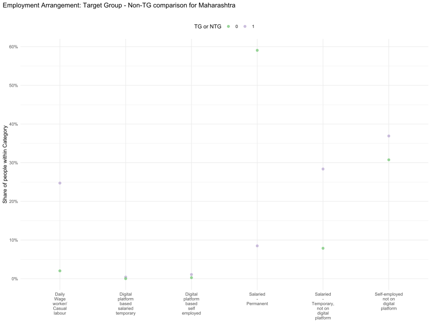
Employment arrangement and Gender
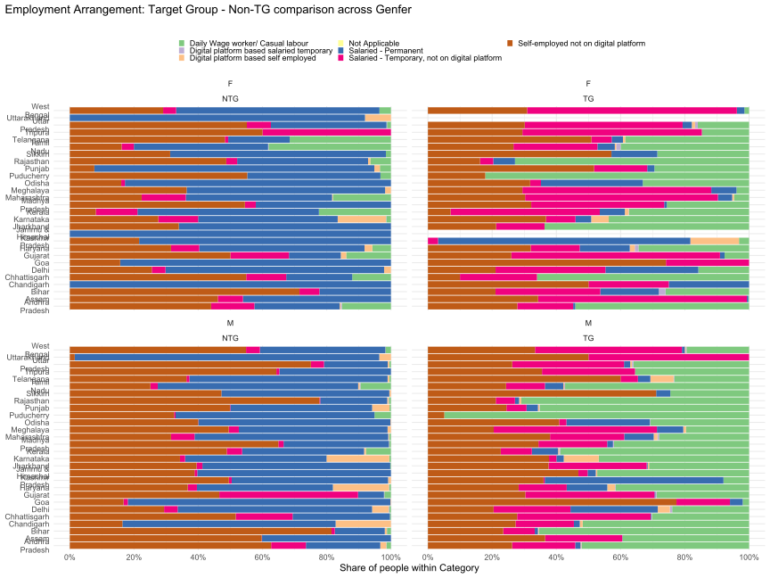
Employment arrangement and gender in Mharashtra
| EMPLOYMENT_ARRANGEMENT | Distribution of Women in TG | Distribution of Men in TG | Distribution of Women in NTG | Distribution of Men in NTG |
|---|---|---|---|---|
| Daily Wage worker/ Casual labour | 4.7% | 28.1% | 18.1% | 0.6% |
| Digital platform based self employed | 0.6% | 1.2% | 0.3% | 0.3% |
| Not Applicable | 0.0% | 0.0% | 0.0% | 0.0% |
| Salaried - Permanent | 4.4% | 9.2% | 45.6% | 60.3% |
| Salaried - Temporary, not on digital platform | 60.1% | 23.1% | 13.7% | 7.3% |
| Self-employed not on digital platform | 30.3% | 38.0% | 22.4% | 31.5% |
| Digital platform based salaried temporary | - | 0.5% | - | 0.0% |
Employment and Caste Category in Maharashtra
| EMPLOYMENT_ARRANGEMENT | Intermediate Caste in TG | Not Stated in TG | OBC in TG | SC in TG | ST in TG | Upper Caste in TG | Intermediate Caste in NTG | Not Stated in NTG | OBS in NTG | SC in NTG | ST in NTG | Upper Caste in NTG |
|---|---|---|---|---|---|---|---|---|---|---|---|---|
| Daily Wage worker/ Casual labour | 14.3% | 9.2% | 25.2% | 32.8% | 40.8% | 19.0% | 1.2% | 4.3% | 3.2% | 1.9% | 7.8% | 0.4% |
| Digital platform based salaried temporary | 0.4% | 1.9% | 0.2% | 0.5% | - | 0.4% | - | - | 0.0% | - | - | 0.0% |
| Digital platform based self employed | 1.3% | 0.3% | 1.3% | 0.6% | 0.4% | 1.6% | 0.5% | - | 0.1% | 0.1% | - | 0.5% |
| Not Applicable | 0.0% | - | 0.0% | 0.0% | 0.0% | 0.0% | 0.0% | 0.0% | 0.0% | 0.0% | 0.0% | 0.0% |
| Salaried - Permanent | 10.2% | 20.6% | 6.5% | 5.1% | 2.8% | 14.2% | 65.2% | 60.1% | 53.1% | 57.2% | 45.5% | 63.1% |
| Salaried - Temporary, not on digital platform | 27.6% | 33.0% | 27.9% | 35.7% | 30.0% | 18.3% | 7.6% | 10.8% | 9.1% | 12.3% | 11.7% | 2.4% |
| Self-employed not on digital platform | 46.2% | 35.1% | 38.9% | 25.2% | 26.0% | 46.6% | 25.5% | 24.8% | 34.5% | 28.5% | 35.0% | 33.6% |
Bank Accounts
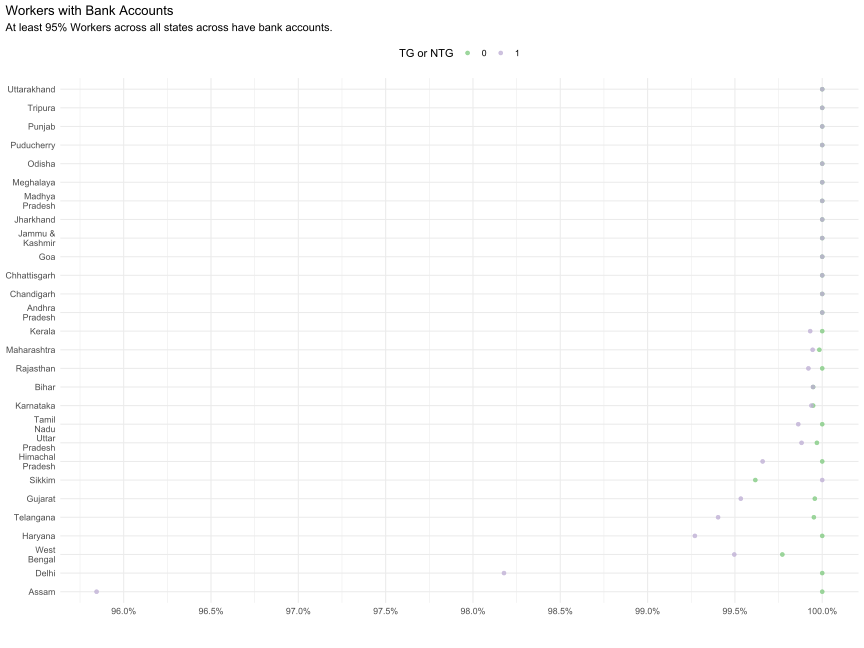
| STATE | NTG | TG |
|---|---|---|
| Jammu & Kashmir | 100.0% | 100.0% |
| Himachal Pradesh | 100.0% | 99.7% |
| Chandigarh | 100.0% | 100.0% |
| Punjab | 100.0% | 100.0% |
| Haryana | 100.0% | 99.3% |
| Delhi | 100.0% | 98.2% |
| Rajasthan | 100.0% | 99.9% |
| Uttar Pradesh | 100.0% | 99.9% |
| Uttarakhand | 100.0% | 100.0% |
| Gujarat | 100.0% | 99.5% |
| Maharashtra | 100.0% | 99.9% |
| Goa | 100.0% | 100.0% |
| Madhya Pradesh | 100.0% | 100.0% |
| Karnataka | 99.9% | 99.9% |
| Andhra Pradesh | 100.0% | 100.0% |
| Telangana | 100.0% | 99.4% |
| Tamil Nadu | 100.0% | 99.9% |
| Puducherry | 100.0% | 100.0% |
| Kerala | 100.0% | 99.9% |
| Assam | 100.0% | 95.8% |
| West Bengal | 99.8% | 99.5% |
| Bihar | 99.9% | 99.9% |
| Jharkhand | 100.0% | 100.0% |
| Odisha | 100.0% | 100.0% |
| Chhattisgarh | 100.0% | 100.0% |
| Sikkim | 99.6% | 100.0% |
| Tripura | 100.0% | 100.0% |
| Meghalaya | 100.0% | 100.0% |
Bank accounts and gender
| STATE | Female Workers in NTG | Male Workers in NTG | Male Workers in TG | Female Workers in TG |
|---|---|---|---|---|
| Jammu & Kashmir | 100.0% | 100.0% | 100.0% | - |
| Himachal Pradesh | 100.0% | 100.0% | 99.6% | 100.0% |
| Chandigarh | 100.0% | 100.0% | 100.0% | 100.0% |
| Punjab | 100.0% | 100.0% | 100.0% | 100.0% |
| Haryana | 100.0% | 100.0% | 99.3% | 98.0% |
| Delhi | 100.0% | 100.0% | 98.0% | 100.0% |
| Rajasthan | 100.0% | 100.0% | 99.9% | 100.0% |
| Uttar Pradesh | 100.0% | 100.0% | 99.9% | 100.0% |
| Uttarakhand | 100.0% | 100.0% | 100.0% | - |
| Gujarat | 100.0% | 100.0% | 99.5% | 100.0% |
| Maharashtra | 99.9% | 100.0% | 99.9% | 100.0% |
| Goa | 100.0% | 100.0% | 100.0% | 100.0% |
| Madhya Pradesh | 100.0% | 100.0% | 100.0% | 100.0% |
| Karnataka | 100.0% | 99.9% | 100.0% | 98.4% |
| Andhra Pradesh | 100.0% | 100.0% | 100.0% | 100.0% |
| Telangana | 100.0% | 99.9% | 99.6% | 98.7% |
| Tamil Nadu | 100.0% | 100.0% | 99.9% | 99.8% |
| Puducherry | 100.0% | 100.0% | 100.0% | 100.0% |
| Kerala | 100.0% | 100.0% | 100.0% | 99.5% |
| Assam | 100.0% | 100.0% | 96.2% | 94.3% |
| West Bengal | 100.0% | 99.7% | 99.5% | 99.5% |
| Bihar | 100.0% | 99.9% | 99.9% | 100.0% |
| Jharkhand | 100.0% | 100.0% | 100.0% | 100.0% |
| Odisha | 100.0% | 100.0% | 100.0% | 100.0% |
| Chhattisgarh | 100.0% | 100.0% | 100.0% | 100.0% |
| Sikkim | 100.0% | 99.5% | 100.0% | 100.0% |
| Tripura | 100.0% | 100.0% | 100.0% | 100.0% |
| Meghalaya | 100.0% | 100.0% | 100.0% | 100.0% |
Bank accounts and Caste Category
| STATE | Intermediate Caste Workers in NTG | Not Stated Workers in NTG | OBC Workers in NTG | SC Workers in NTG | Upper Caste Workers in NTG | Intermediate Caste Workers in TG | Not Stated Workers in TG | OBC Workers in TG | SC Workers in TG | Upper Caste Workers in TG | ST Workers in NTG | ST Workers in TG |
|---|---|---|---|---|---|---|---|---|---|---|---|---|
| Jammu & Kashmir | 100.0% | 100.0% | 100.0% | 100.0% | 100.0% | 100.0% | 100.0% | 100.0% | 100.0% | 100.0% | - | - |
| Himachal Pradesh | 100.0% | 100.0% | 100.0% | 100.0% | 100.0% | 100.0% | 100.0% | 100.0% | 99.3% | 100.0% | 100.0% | - |
| Chandigarh | 100.0% | 100.0% | 100.0% | 100.0% | 100.0% | 100.0% | 100.0% | 100.0% | 100.0% | 100.0% | 100.0% | 100.0% |
| Punjab | 100.0% | 100.0% | 100.0% | 100.0% | 100.0% | 100.0% | 100.0% | 100.0% | 100.0% | 100.0% | 100.0% | 100.0% |
| Haryana | 100.0% | 100.0% | 100.0% | 100.0% | 100.0% | 100.0% | 69.7% | 98.7% | 99.6% | 99.6% | 100.0% | 100.0% |
| Delhi | 100.0% | 100.0% | 100.0% | 100.0% | 100.0% | 100.0% | - | 95.3% | 99.0% | 99.3% | 100.0% | 100.0% |
| Rajasthan | 100.0% | 100.0% | 100.0% | 100.0% | 100.0% | 100.0% | 100.0% | 99.9% | 100.0% | 99.8% | 100.0% | 100.0% |
| Uttar Pradesh | 100.0% | 100.0% | 99.9% | 100.0% | 100.0% | 100.0% | 100.0% | 99.9% | 99.7% | 100.0% | 100.0% | 100.0% |
| Uttarakhand | 100.0% | - | 100.0% | 100.0% | 100.0% | - | - | 100.0% | - | 100.0% | 100.0% | - |
| Gujarat | 100.0% | 100.0% | 99.9% | 100.0% | 100.0% | 100.0% | 89.9% | 99.7% | 100.0% | 98.6% | 100.0% | 100.0% |
| Maharashtra | 100.0% | 100.0% | 100.0% | 100.0% | 100.0% | 100.0% | 100.0% | 100.0% | 99.8% | 100.0% | 99.7% | 99.9% |
| Goa | 100.0% | 100.0% | 100.0% | 100.0% | 100.0% | 100.0% | 100.0% | 100.0% | - | 100.0% | 100.0% | 100.0% |
| Madhya Pradesh | 100.0% | - | 100.0% | 100.0% | 100.0% | 100.0% | 100.0% | 100.0% | 100.0% | 100.0% | 100.0% | 100.0% |
| Karnataka | 99.9% | 100.0% | 99.9% | 100.0% | 100.0% | 100.0% | 100.0% | 99.8% | 100.0% | 100.0% | 100.0% | 100.0% |
| Andhra Pradesh | 100.0% | 100.0% | 100.0% | 100.0% | 100.0% | 100.0% | 100.0% | 100.0% | 100.0% | 100.0% | 100.0% | 100.0% |
| Telangana | 99.7% | 100.0% | 100.0% | 100.0% | 99.9% | 98.4% | - | 99.1% | 100.0% | 100.0% | 100.0% | 100.0% |
| Tamil Nadu | 100.0% | 100.0% | 100.0% | 100.0% | 100.0% | 100.0% | 100.0% | 99.8% | 100.0% | 100.0% | 100.0% | 100.0% |
| Puducherry | 100.0% | 100.0% | 100.0% | 100.0% | 100.0% | - | 100.0% | 100.0% | 100.0% | - | - | - |
| Kerala | 100.0% | 100.0% | 100.0% | 100.0% | 100.0% | 100.0% | 100.0% | 99.9% | 99.9% | 100.0% | 100.0% | 100.0% |
| Assam | - | - | 100.0% | 100.0% | 100.0% | - | 100.0% | 100.0% | 89.3% | 98.0% | 100.0% | 75.0% |
| West Bengal | - | 100.0% | 100.0% | 99.2% | 99.9% | - | 100.0% | 99.8% | 99.3% | 99.5% | 100.0% | 100.0% |
| Bihar | - | 100.0% | 99.9% | 100.0% | 100.0% | - | - | 99.9% | 100.0% | 100.0% | 100.0% | 100.0% |
| Jharkhand | 100.0% | - | 100.0% | 100.0% | 100.0% | - | - | 100.0% | 100.0% | 100.0% | 100.0% | 100.0% |
| Odisha | 100.0% | 100.0% | 100.0% | 100.0% | 100.0% | 100.0% | 100.0% | 100.0% | 100.0% | 100.0% | 100.0% | 100.0% |
| Chhattisgarh | 100.0% | - | 100.0% | 100.0% | 100.0% | 100.0% | 100.0% | 100.0% | 100.0% | 100.0% | 100.0% | 100.0% |
| Sikkim | - | - | 100.0% | 97.4% | 100.0% | - | - | 100.0% | 100.0% | 100.0% | 100.0% | 100.0% |
| Tripura | - | - | 100.0% | 100.0% | 100.0% | - | - | 100.0% | 100.0% | 100.0% | 100.0% | 100.0% |
| Meghalaya | 100.0% | - | 100.0% | 100.0% | 100.0% | - | 100.0% | 100.0% | 100.0% | 100.0% | 100.0% | 100.0% |
Credit Cards
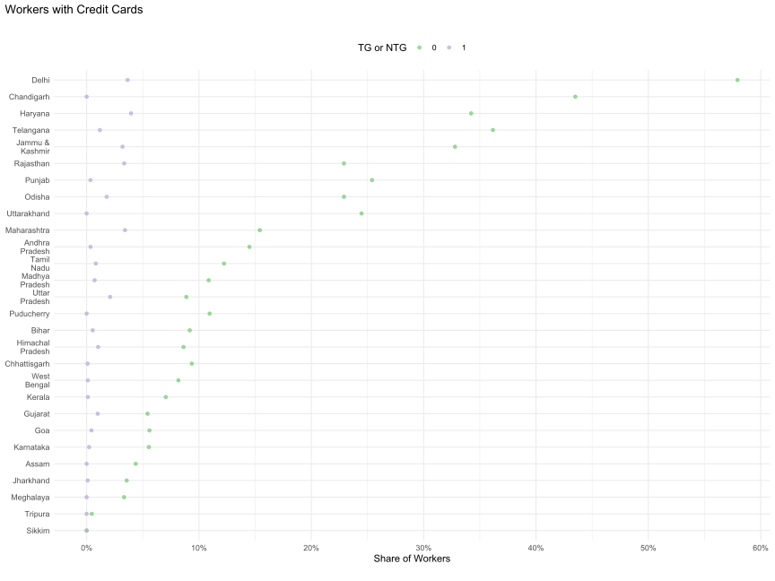
| STATE | NTG | TG |
|---|---|---|
| Jammu & Kashmir | 32.8% | 3.2% |
| Himachal Pradesh | 8.6% | 1.0% |
| Chandigarh | 43.5% | 0.0% |
| Punjab | 25.4% | 0.3% |
| Haryana | 34.2% | 3.9% |
| Delhi | 57.9% | 3.6% |
| Rajasthan | 22.9% | 3.3% |
| Uttar Pradesh | 8.9% | 2.1% |
| Uttarakhand | 24.5% | 0.0% |
| Gujarat | 5.4% | 1.0% |
| Maharashtra | 15.4% | 3.4% |
| Goa | 5.6% | 0.4% |
| Madhya Pradesh | 10.9% | 0.7% |
| Karnataka | 5.5% | 0.2% |
| Andhra Pradesh | 14.5% | 0.3% |
| Telangana | 36.2% | 1.2% |
| Tamil Nadu | 12.2% | 0.8% |
| Puducherry | 10.9% | 0.0% |
| Kerala | 7.0% | 0.1% |
| Assam | 4.4% | 0.0% |
| West Bengal | 8.2% | 0.1% |
| Bihar | 9.2% | 0.5% |
| Jharkhand | 3.6% | 0.1% |
| Odisha | 22.9% | 1.8% |
| Chhattisgarh | 9.4% | 0.1% |
| Sikkim | 0.0% | 0.0% |
| Tripura | 0.5% | 0.0% |
| Meghalaya | 3.3% | 0.0% |
Credit cards and gender
| STATE | Female Workers in NTG | Male Workers in NTG | Male Workers in TG | Female Workers in TG |
|---|---|---|---|---|
| Jammu & Kashmir | 53.1% | 32.3% | 3.2% | - |
| Himachal Pradesh | 17.9% | 7.8% | 1.1% | 0.0% |
| Chandigarh | 62.5% | 42.9% | 0.0% | 0.0% |
| Punjab | 44.8% | 25.0% | 0.3% | 0.0% |
| Haryana | 21.5% | 34.7% | 3.9% | 4.7% |
| Delhi | 59.6% | 57.8% | 3.7% | 2.6% |
| Rajasthan | 36.0% | 22.8% | 3.4% | 0.0% |
| Uttar Pradesh | 7.3% | 8.9% | 2.1% | 1.6% |
| Uttarakhand | 15.3% | 24.9% | 0.0% | - |
| Gujarat | 0.3% | 5.8% | 1.1% | 0.1% |
| Maharashtra | 9.7% | 15.9% | 3.9% | 0.5% |
| Goa | 37.3% | 3.9% | 0.5% | 0.0% |
| Madhya Pradesh | 12.0% | 10.8% | 0.7% | 0.0% |
| Karnataka | 4.6% | 5.6% | 0.2% | 1.1% |
| Andhra Pradesh | 12.3% | 14.7% | 0.3% | 0.6% |
| Telangana | 8.8% | 39.7% | 1.4% | 0.1% |
| Tamil Nadu | 3.9% | 13.0% | 0.9% | 0.2% |
| Puducherry | 15.0% | 10.6% | 0.0% | 0.0% |
| Kerala | 7.7% | 7.0% | 0.1% | 0.0% |
| Assam | 0.6% | 5.1% | 0.0% | 0.0% |
| West Bengal | 12.5% | 7.7% | 0.1% | 0.0% |
| Bihar | 6.6% | 9.2% | 0.5% | 0.0% |
| Jharkhand | 0.0% | 3.6% | 0.1% | 0.0% |
| Odisha | 16.9% | 23.2% | 1.9% | 0.5% |
| Chhattisgarh | 0.0% | 9.8% | 0.1% | 0.0% |
| Sikkim | 0.0% | 0.0% | 0.0% | 0.0% |
| Tripura | 0.0% | 0.5% | 0.0% | 0.0% |
| Meghalaya | 1.8% | 4.2% | 0.0% | 0.0% |
Credit card adoption in TG is almost non existent across all states and gender.
However, almost in all state, a higher proportion of Male NTG workers have a credit card compared to Female NTG workers. Interestingly, this pattern reverses in states like Goa, West Bengal, Rajasthan, J&K, Chandighar and Himachal.
Credit Cards and Caste Category
| STATE | Intermediate Caste Workers in NTG | Not Stated Workers in NTG | OBC Workers in NTG | SC Workers in NTG | Upper Caste Workers in NTG | Intermediate Caste Workers in TG | Not Stated Workers in TG | OBC Workers in TG | SC Workers in TG | Upper Caste Workers in TG | ST Workers in NTG | ST Workers in TG |
|---|---|---|---|---|---|---|---|---|---|---|---|---|
| Jammu & Kashmir | 17.5% | 10.2% | 80.2% | 38.9% | 66.9% | 0.0% | 0.0% | 0.0% | 13.9% | 25.5% | - | - |
| Himachal Pradesh | 0.0% | 0.0% | 0.0% | 3.8% | 11.2% | 0.0% | 0.0% | 0.0% | 0.7% | 1.5% | 0.0% | - |
| Chandigarh | 68.8% | 60.0% | 17.5% | 16.7% | 49.0% | 0.0% | 0.0% | 0.0% | 0.0% | 0.0% | 50.0% | 0.0% |
| Punjab | 30.3% | 46.8% | 20.7% | 8.8% | 32.6% | 6.8% | 0.0% | 0.4% | 0.0% | 1.6% | 3.5% | 0.0% |
| Haryana | 37.3% | 9.4% | 26.8% | 16.2% | 39.7% | 8.4% | 0.0% | 2.5% | 1.1% | 9.9% | 14.0% | 0.0% |
| Delhi | 69.0% | 60.0% | 30.4% | 18.0% | 71.7% | 0.0% | - | 0.0% | 1.5% | 9.7% | 80.0% | 0.0% |
| Rajasthan | 17.7% | 0.0% | 17.6% | 19.2% | 28.1% | 0.9% | 0.0% | 2.8% | 1.1% | 8.7% | 28.3% | 0.0% |
| Uttar Pradesh | 5.0% | 18.1% | 3.6% | 4.4% | 14.0% | 42.8% | 0.0% | 0.6% | 0.3% | 4.6% | 10.7% | 0.0% |
| Uttarakhand | 22.6% | - | 26.1% | 17.8% | 26.0% | - | - | 0.0% | - | 0.0% | 0.0% | - |
| Gujarat | 11.2% | 0.0% | 3.4% | 4.2% | 6.1% | 6.7% | 0.0% | 0.5% | 0.0% | 2.1% | 7.2% | 0.8% |
| Maharashtra | 16.4% | 13.5% | 14.1% | 10.5% | 20.1% | 4.0% | 6.4% | 2.3% | 1.9% | 6.9% | 14.2% | 1.4% |
| Goa | 0.0% | 4.3% | 0.6% | 0.0% | 22.0% | 0.0% | 0.0% | 0.0% | - | 3.7% | 0.0% | 0.0% |
| Madhya Pradesh | 4.5% | - | 6.7% | 4.7% | 18.0% | 0.0% | 0.0% | 0.4% | 0.8% | 1.6% | 5.2% | 0.0% |
| Karnataka | 3.8% | 9.9% | 5.5% | 4.0% | 8.4% | 0.4% | 0.0% | 0.0% | 0.6% | 0.0% | 1.6% | 0.0% |
| Andhra Pradesh | 18.3% | 0.0% | 13.5% | 7.4% | 13.2% | 0.3% | 0.0% | 0.5% | 0.2% | 0.0% | 7.4% | 1.1% |
| Telangana | 51.1% | 74.0% | 34.3% | 28.9% | 37.6% | 1.6% | - | 1.1% | 0.8% | 2.1% | 30.7% | 0.0% |
| Tamil Nadu | 13.4% | 1.4% | 10.5% | 14.6% | 27.3% | 3.5% | 15.9% | 0.5% | 0.2% | 5.5% | 0.0% | 0.0% |
| Puducherry | 33.1% | 0.0% | 9.8% | 3.3% | 44.3% | - | 0.0% | 0.0% | 0.0% | - | - | - |
| Kerala | 10.8% | 8.2% | 6.0% | 0.0% | 19.7% | 0.6% | 0.0% | 0.1% | 0.1% | 0.0% | 0.0% | 0.0% |
| Assam | - | - | 0.2% | 0.0% | 6.3% | - | 0.0% | 0.0% | 0.0% | 0.0% | 3.8% | 0.0% |
| West Bengal | - | 64.0% | 4.1% | 1.6% | 11.1% | - | 0.0% | 0.0% | 0.0% | 0.3% | 15.0% | 0.0% |
| Bihar | - | 0.0% | 5.7% | 6.8% | 15.3% | - | - | 0.5% | 0.3% | 1.4% | 35.7% | 0.0% |
| Jharkhand | 0.0% | - | 4.9% | 2.6% | 2.4% | - | - | 0.0% | 0.0% | 0.0% | 0.0% | 0.5% |
| Odisha | 21.9% | 0.0% | 16.8% | 22.4% | 30.1% | 1.7% | 0.0% | 0.7% | 2.2% | 4.6% | 16.8% | 0.0% |
| Chhattisgarh | 9.6% | - | 6.9% | 10.3% | 14.2% | 0.0% | 0.0% | 0.1% | 0.0% | 0.0% | 7.7% | 0.2% |
| Sikkim | - | - | 0.0% | 0.0% | 0.0% | - | - | 0.0% | 0.0% | 0.0% | 0.0% | 0.0% |
| Tripura | - | - | 0.0% | 1.5% | 0.0% | - | - | 0.0% | 0.0% | 0.0% | 0.0% | 0.0% |
| Meghalaya | 0.0% | - | 6.7% | 0.0% | 6.0% | - | 0.0% | 0.0% | 0.0% | 0.0% | 0.0% | 0.0% |
PF Accounts
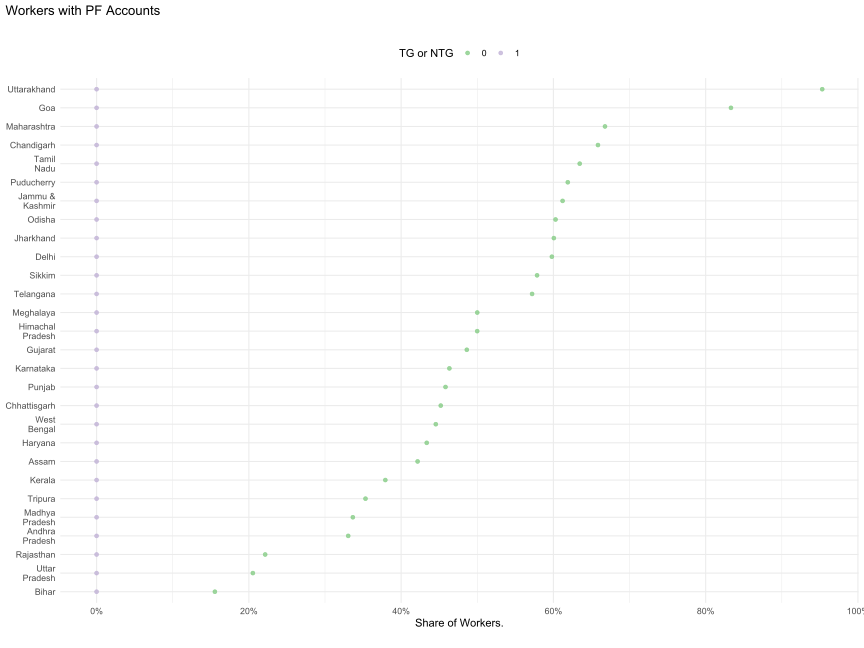
| STATE | NTG | TG |
|---|---|---|
| Jammu & Kashmir | 61.2% | 0.0% |
| Himachal Pradesh | 50.0% | 0.0% |
| Chandigarh | 65.9% | 0.0% |
| Punjab | 45.8% | 0.0% |
| Haryana | 43.4% | 0.0% |
| Delhi | 59.8% | 0.0% |
| Rajasthan | 22.1% | 0.0% |
| Uttar Pradesh | 20.5% | 0.0% |
| Uttarakhand | 95.3% | 0.0% |
| Gujarat | 48.6% | 0.0% |
| Maharashtra | 66.8% | 0.0% |
| Goa | 83.3% | 0.0% |
| Madhya Pradesh | 33.7% | 0.0% |
| Karnataka | 46.3% | 0.0% |
| Andhra Pradesh | 33.0% | 0.0% |
| Telangana | 57.2% | 0.0% |
| Tamil Nadu | 63.5% | 0.0% |
| Puducherry | 61.9% | 0.0% |
| Kerala | 37.9% | 0.0% |
| Assam | 42.2% | 0.0% |
| West Bengal | 44.6% | 0.0% |
| Bihar | 15.5% | 0.0% |
| Jharkhand | 60.1% | 0.0% |
| Odisha | 60.3% | 0.0% |
| Chhattisgarh | 45.2% | 0.0% |
| Sikkim | 57.9% | 0.0% |
| Tripura | 35.3% | 0.0% |
| Meghalaya | 50.0% | 0.0% |
PF accounts and gender
| STATE | Female Workers in NTG | Male Workers in NTG | Male Workers in TG | Female Workers in TG |
|---|---|---|---|---|
| Jammu & Kashmir | 100.0% | 60.3% | 0.0% | - |
| Himachal Pradesh | 66.2% | 48.5% | 0.0% | 0.0% |
| Chandigarh | 75.0% | 65.5% | 0.0% | 0.0% |
| Punjab | 85.5% | 44.9% | 0.0% | 0.0% |
| Haryana | 50.4% | 43.1% | 0.0% | 0.0% |
| Delhi | 68.1% | 59.1% | 0.0% | 0.0% |
| Rajasthan | 43.6% | 21.9% | 0.0% | 0.0% |
| Uttar Pradesh | 31.9% | 20.1% | 0.0% | 0.0% |
| Uttarakhand | 91.9% | 95.5% | 0.0% | - |
| Gujarat | 26.1% | 50.2% | 0.0% | 0.0% |
| Maharashtra | 58.1% | 67.6% | 0.0% | 0.0% |
| Goa | 84.3% | 83.3% | 0.0% | 0.0% |
| Madhya Pradesh | 42.1% | 33.5% | 0.0% | 0.0% |
| Karnataka | 54.3% | 45.8% | 0.0% | 0.0% |
| Andhra Pradesh | 37.4% | 32.6% | 0.0% | 0.0% |
| Telangana | 20.1% | 62.0% | 0.0% | 0.0% |
| Tamil Nadu | 41.1% | 65.6% | 0.0% | 0.0% |
| Puducherry | 41.5% | 63.8% | 0.0% | 0.0% |
| Kerala | 53.7% | 36.6% | 0.0% | 0.0% |
| Assam | 53.6% | 39.8% | 0.0% | 0.0% |
| West Bengal | 63.6% | 42.5% | 0.0% | 0.0% |
| Bihar | 17.4% | 15.5% | 0.0% | 0.0% |
| Jharkhand | 76.1% | 59.7% | 0.0% | 0.0% |
| Odisha | 79.0% | 59.5% | 0.0% | 0.0% |
| Chhattisgarh | 26.6% | 46.0% | 0.0% | 0.0% |
| Sikkim | 71.9% | 53.3% | 0.0% | 0.0% |
| Tripura | 40.0% | 35.2% | 0.0% | 0.0% |
| Meghalaya | 54.5% | 47.4% | 0.0% | 0.0% |
PF Accounts and Caste Category
| STATE | Intermediate Caste Workers in NTG | Not Stated Workers in NTG | OBC Workers in NTG | SC Workers in NTG | Upper Caste Workers in NTG | Intermediate Caste Workers in TG | Not Stated Workers in TG | OBC Workers in TG | SC Workers in TG | Upper Caste Workers in TG | ST Workers in NTG | ST Workers in TG |
|---|---|---|---|---|---|---|---|---|---|---|---|---|
| Jammu & Kashmir | 60.4% | 49.8% | 69.3% | 75.8% | 74.4% | 0.0% | 0.0% | 0.0% | 0.0% | 0.0% | - | - |
| Himachal Pradesh | 50.0% | 0.0% | 17.2% | 45.6% | 52.3% | 0.0% | 0.0% | 0.0% | 0.0% | 0.0% | 100.0% | - |
| Chandigarh | 75.0% | 60.0% | 80.0% | 79.2% | 57.3% | 0.0% | 0.0% | 0.0% | 0.0% | 0.0% | 100.0% | 0.0% |
| Punjab | 41.9% | 44.5% | 49.8% | 64.6% | 37.1% | 0.0% | 0.0% | 0.0% | 0.0% | 0.0% | 94.5% | 0.0% |
| Haryana | 56.3% | 64.0% | 41.3% | 57.3% | 37.6% | 0.0% | 0.0% | 0.0% | 0.0% | 0.0% | 31.2% | 0.0% |
| Delhi | 48.3% | 80.0% | 57.0% | 74.2% | 57.1% | 0.0% | - | 0.0% | 0.0% | 0.0% | 100.0% | 0.0% |
| Rajasthan | 17.8% | 0.0% | 15.1% | 20.9% | 27.8% | 0.0% | 0.0% | 0.0% | 0.0% | 0.0% | 26.0% | 0.0% |
| Uttar Pradesh | 25.9% | 30.9% | 12.9% | 29.7% | 22.9% | 0.0% | 0.0% | 0.0% | 0.0% | 0.0% | 0.0% | 0.0% |
| Uttarakhand | 94.0% | - | 89.6% | 96.9% | 97.2% | - | - | 0.0% | - | 0.0% | 100.0% | - |
| Gujarat | 51.5% | 69.1% | 35.6% | 82.0% | 41.7% | 0.0% | 0.0% | 0.0% | 0.0% | 0.0% | 82.5% | 0.0% |
| Maharashtra | 73.5% | 69.4% | 62.5% | 69.6% | 64.0% | 0.0% | 0.0% | 0.0% | 0.0% | 0.0% | 57.6% | 0.0% |
| Goa | 87.2% | 80.5% | 87.6% | 100.0% | 75.3% | 0.0% | 0.0% | 0.0% | - | 0.0% | 100.0% | 0.0% |
| Madhya Pradesh | 16.6% | - | 30.0% | 34.4% | 38.1% | 0.0% | 0.0% | 0.0% | 0.0% | 0.0% | 44.5% | 0.0% |
| Karnataka | 45.7% | 40.2% | 46.6% | 54.0% | 42.5% | 0.0% | 0.0% | 0.0% | 0.0% | 0.0% | 42.0% | 0.0% |
| Andhra Pradesh | 39.9% | 0.0% | 26.4% | 39.7% | 27.5% | 0.0% | 0.0% | 0.0% | 0.0% | 0.0% | 34.8% | 0.0% |
| Telangana | 67.1% | 75.1% | 55.2% | 59.4% | 46.3% | 0.0% | - | 0.0% | 0.0% | 0.0% | 75.4% | 0.0% |
| Tamil Nadu | 60.5% | 41.9% | 59.0% | 77.6% | 70.3% | 0.0% | 0.0% | 0.0% | 0.0% | 0.0% | 23.4% | 0.0% |
| Puducherry | 79.7% | 74.6% | 60.6% | 60.0% | 80.8% | - | 0.0% | 0.0% | 0.0% | - | - | - |
| Kerala | 60.9% | 43.2% | 33.3% | 20.2% | 64.2% | 0.0% | 0.0% | 0.0% | 0.0% | 0.0% | 2.5% | 0.0% |
| Assam | - | - | 42.8% | 40.1% | 41.1% | - | 0.0% | 0.0% | 0.0% | 0.0% | 100.0% | 0.0% |
| West Bengal | - | 36.0% | 28.3% | 37.0% | 51.1% | - | 0.0% | 0.0% | 0.0% | 0.0% | 58.9% | 0.0% |
| Bihar | - | 0.0% | 9.1% | 25.7% | 23.2% | - | - | 0.0% | 0.0% | 0.0% | 35.7% | 0.0% |
| Jharkhand | 100.0% | - | 54.2% | 52.9% | 78.0% | - | - | 0.0% | 0.0% | 0.0% | 41.7% | 0.0% |
| Odisha | 61.2% | 0.0% | 48.7% | 61.6% | 68.5% | 0.0% | 0.0% | 0.0% | 0.0% | 0.0% | 70.6% | 0.0% |
| Chhattisgarh | 62.8% | - | 44.6% | 51.5% | 41.6% | 0.0% | 0.0% | 0.0% | 0.0% | 0.0% | 39.6% | 0.0% |
| Sikkim | - | - | 50.3% | 64.1% | 0.0% | - | - | 0.0% | 0.0% | 0.0% | 80.0% | 0.0% |
| Tripura | - | - | 40.9% | 87.9% | 6.3% | - | - | 0.0% | 0.0% | 0.0% | 66.7% | 0.0% |
| Meghalaya | 50.0% | - | 53.3% | 71.4% | 37.3% | - | 0.0% | 0.0% | 0.0% | 0.0% | 60.4% | 0.0% |
Life Insurance
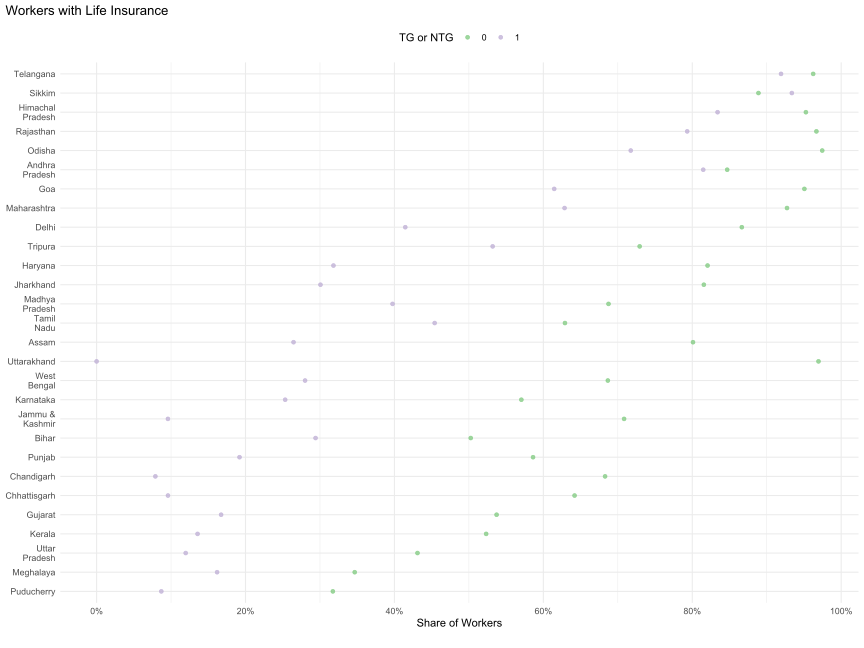
| STATE | NTG | TG |
|---|---|---|
| Jammu & Kashmir | 70.8% | 9.6% |
| Himachal Pradesh | 95.3% | 83.4% |
| Chandigarh | 68.3% | 7.9% |
| Punjab | 58.6% | 19.2% |
| Haryana | 82.1% | 31.8% |
| Delhi | 86.7% | 41.5% |
| Rajasthan | 96.7% | 79.3% |
| Uttar Pradesh | 43.1% | 12.0% |
| Uttarakhand | 97.0% | 0.0% |
| Gujarat | 53.7% | 16.7% |
| Maharashtra | 92.7% | 62.9% |
| Goa | 95.1% | 61.5% |
| Madhya Pradesh | 68.8% | 39.7% |
| Karnataka | 57.0% | 25.3% |
| Andhra Pradesh | 84.7% | 81.5% |
| Telangana | 96.2% | 91.9% |
| Tamil Nadu | 62.9% | 45.4% |
| Puducherry | 31.7% | 8.7% |
| Kerala | 52.3% | 13.6% |
| Assam | 80.1% | 26.5% |
| West Bengal | 68.7% | 28.0% |
| Bihar | 50.2% | 29.4% |
| Jharkhand | 81.6% | 30.1% |
| Odisha | 97.5% | 71.7% |
| Chhattisgarh | 64.2% | 9.6% |
| Sikkim | 88.9% | 93.4% |
| Tripura | 72.9% | 53.2% |
| Meghalaya | 34.7% | 16.2% |
Life Insurance and gender
| STATE | Female Workers in NTG | Male Workers in NTG | Male Workers in TG | Female Workers in TG |
|---|---|---|---|---|
| Jammu & Kashmir | 100.0% | 70.1% | 9.6% | - |
| Himachal Pradesh | 100.0% | 94.8% | 85.9% | 62.9% |
| Chandigarh | 87.5% | 67.6% | 8.2% | 0.0% |
| Punjab | 83.4% | 58.1% | 19.3% | 11.0% |
| Haryana | 73.0% | 82.4% | 32.4% | 19.5% |
| Delhi | 91.5% | 86.2% | 42.6% | 28.9% |
| Rajasthan | 98.7% | 96.7% | 79.5% | 66.6% |
| Uttar Pradesh | 42.9% | 43.1% | 11.9% | 12.8% |
| Uttarakhand | 97.9% | 96.9% | 0.0% | - |
| Gujarat | 25.9% | 55.7% | 17.6% | 10.1% |
| Maharashtra | 76.2% | 94.2% | 66.1% | 43.0% |
| Goa | 84.3% | 95.6% | 65.7% | 6.0% |
| Madhya Pradesh | 65.7% | 68.8% | 39.9% | 37.3% |
| Karnataka | 55.3% | 57.2% | 25.6% | 17.9% |
| Andhra Pradesh | 70.2% | 86.1% | 80.9% | 85.4% |
| Telangana | 94.0% | 96.5% | 93.1% | 86.9% |
| Tamil Nadu | 41.8% | 64.9% | 46.4% | 39.2% |
| Puducherry | 36.5% | 31.3% | 9.4% | 0.0% |
| Kerala | 63.9% | 51.3% | 13.0% | 25.2% |
| Assam | 71.9% | 81.8% | 28.4% | 17.8% |
| West Bengal | 68.8% | 68.6% | 30.0% | 18.0% |
| Bihar | 51.0% | 50.2% | 29.4% | 26.3% |
| Jharkhand | 84.6% | 81.5% | 30.4% | 14.7% |
| Odisha | 92.8% | 97.7% | 72.3% | 63.3% |
| Chhattisgarh | 46.0% | 65.0% | 10.5% | 3.7% |
| Sikkim | 90.6% | 88.3% | 93.7% | 85.7% |
| Tripura | 80.0% | 72.8% | 59.8% | 32.4% |
| Meghalaya | 27.3% | 38.9% | 17.2% | 13.7% |
Life Insurance and Caste Category
| STATE | Intermediate Caste Workers in NTG | Not Stated Workers in NTG | OBC Workers in NTG | SC Workers in NTG | Upper Caste Workers in NTG | Intermediate Caste Workers in TG | Not Stated Workers in TG | OBC Workers in TG | SC Workers in TG | Upper Caste Workers in TG | ST Workers in NTG | ST Workers in TG |
|---|---|---|---|---|---|---|---|---|---|---|---|---|
| Jammu & Kashmir | 60.4% | 49.4% | 100.0% | 100.0% | 95.3% | 0.0% | 0.9% | 100.0% | 100.0% | 38.5% | - | - |
| Himachal Pradesh | 100.0% | 100.0% | 100.0% | 98.9% | 93.4% | 100.0% | 100.0% | 100.0% | 74.4% | 91.4% | 100.0% | - |
| Chandigarh | 84.4% | 60.0% | 50.0% | 37.5% | 74.8% | 50.0% | 0.0% | 0.0% | 12.1% | 5.0% | 100.0% | 0.0% |
| Punjab | 68.1% | 86.0% | 56.4% | 42.4% | 62.5% | 39.2% | 24.3% | 28.2% | 15.8% | 20.7% | 2.8% | 15.7% |
| Haryana | 85.9% | 100.0% | 73.2% | 70.4% | 86.1% | 68.9% | 0.0% | 26.5% | 22.9% | 45.8% | 65.5% | 11.3% |
| Delhi | 96.6% | 100.0% | 75.9% | 68.5% | 91.9% | 100.0% | - | 39.3% | 37.1% | 47.8% | 100.0% | 100.0% |
| Rajasthan | 98.0% | 100.0% | 96.8% | 96.2% | 96.4% | 83.8% | 100.0% | 82.2% | 74.9% | 81.9% | 99.0% | 74.3% |
| Uttar Pradesh | 35.8% | 49.0% | 32.9% | 37.6% | 52.4% | 59.0% | 18.8% | 8.2% | 8.9% | 19.7% | 30.1% | 0.0% |
| Uttarakhand | 100.0% | - | 91.8% | 98.3% | 98.6% | - | - | 0.0% | - | 0.0% | 100.0% | - |
| Gujarat | 77.9% | 17.8% | 39.8% | 59.2% | 59.8% | 37.2% | 20.3% | 13.5% | 18.9% | 21.9% | 39.2% | 8.7% |
| Maharashtra | 95.0% | 88.6% | 90.4% | 92.5% | 95.3% | 79.6% | 67.1% | 64.6% | 52.0% | 65.8% | 84.4% | 50.6% |
| Goa | 100.0% | 91.2% | 95.1% | 100.0% | 99.1% | 0.0% | 52.6% | 77.2% | - | 74.2% | 100.0% | 53.6% |
| Madhya Pradesh | 51.9% | - | 62.2% | 61.4% | 79.1% | 43.0% | 100.0% | 47.6% | 32.7% | 34.6% | 71.3% | 41.5% |
| Karnataka | 61.0% | 58.3% | 57.5% | 48.9% | 59.9% | 35.5% | 42.6% | 24.5% | 20.9% | 26.1% | 42.9% | 27.3% |
| Andhra Pradesh | 86.2% | 54.6% | 86.5% | 77.2% | 82.3% | 71.1% | 0.0% | 85.5% | 76.0% | 86.0% | 86.6% | 86.1% |
| Telangana | 97.0% | 100.0% | 95.9% | 97.3% | 94.4% | 94.6% | - | 92.6% | 88.6% | 94.0% | 98.6% | 89.9% |
| Tamil Nadu | 55.6% | 79.6% | 59.0% | 77.3% | 64.1% | 46.6% | 72.6% | 46.9% | 40.2% | 53.2% | 1.6% | 25.3% |
| Puducherry | 43.4% | 49.3% | 31.0% | 25.0% | 57.2% | - | 0.0% | 13.5% | 0.0% | - | - | - |
| Kerala | 60.7% | 56.7% | 51.0% | 26.0% | 81.3% | 16.5% | 10.8% | 15.8% | 7.5% | 30.0% | 2.5% | 9.8% |
| Assam | - | - | 98.5% | 78.6% | 73.5% | - | 100.0% | 26.3% | 34.6% | 25.5% | 100.0% | 0.0% |
| West Bengal | - | 36.0% | 61.3% | 45.5% | 78.0% | - | 17.7% | 27.1% | 20.6% | 36.2% | 42.4% | 14.7% |
| Bihar | - | 100.0% | 45.4% | 42.7% | 59.8% | - | - | 32.4% | 27.8% | 21.7% | 78.5% | 22.6% |
| Jharkhand | 100.0% | - | 76.6% | 81.8% | 91.1% | - | - | 29.1% | 22.1% | 41.6% | 78.8% | 38.3% |
| Odisha | 97.2% | 100.0% | 97.2% | 93.9% | 98.7% | 79.3% | 100.0% | 75.0% | 61.1% | 84.4% | 100.0% | 51.2% |
| Chhattisgarh | 76.7% | - | 62.1% | 71.3% | 66.1% | 9.0% | 17.6% | 11.1% | 5.5% | 14.4% | 51.9% | 4.9% |
| Sikkim | - | - | 88.4% | 89.7% | 70.0% | - | - | 90.8% | 100.0% | 88.9% | 92.3% | 97.1% |
| Tripura | - | - | 95.5% | 95.5% | 57.5% | - | - | 62.5% | 34.1% | 64.8% | 66.7% | 45.5% |
| Meghalaya | 50.0% | - | 33.3% | 57.1% | 46.3% | - | 0.0% | 37.5% | 57.1% | 20.0% | 18.9% | 1.7% |
Health Insurance
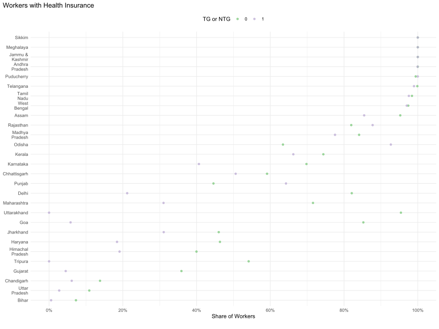
| STATE | NTG | TG |
|---|---|---|
| Jammu & Kashmir | 100.0% | 100.0% |
| Himachal Pradesh | 40.0% | 19.1% |
| Chandigarh | 13.8% | 6.1% |
| Punjab | 44.6% | 64.3% |
| Haryana | 46.3% | 18.4% |
| Delhi | 82.1% | 21.2% |
| Rajasthan | 82.0% | 87.8% |
| Uttar Pradesh | 10.9% | 2.7% |
| Uttarakhand | 95.4% | 0.0% |
| Gujarat | 35.9% | 4.5% |
| Maharashtra | 71.6% | 31.0% |
| Goa | 85.2% | 5.8% |
| Madhya Pradesh | 84.1% | 77.6% |
| Karnataka | 69.8% | 40.6% |
| Andhra Pradesh | 100.0% | 100.0% |
| Telangana | 99.9% | 99.0% |
| Tamil Nadu | 98.4% | 97.6% |
| Puducherry | 99.4% | 100.0% |
| Kerala | 74.4% | 66.2% |
| Assam | 95.3% | 85.5% |
| West Bengal | 97.4% | 97.0% |
| Bihar | 7.3% | 0.5% |
| Jharkhand | 46.0% | 31.1% |
| Odisha | 63.4% | 92.7% |
| Chhattisgarh | 59.1% | 50.6% |
| Sikkim | 100.0% | 100.0% |
| Tripura | 54.1% | 0.0% |
| Meghalaya | 100.0% | 100.0% |
Health Insurance and gender
| STATE | Female Workers in NTG | Male Workers in NTG | Male Workers in TG | Female Workers in TG |
|---|---|---|---|---|
| Jammu & Kashmir | 100.0% | 100.0% | 100.0% | - |
| Himachal Pradesh | 50.4% | 39.0% | 16.8% | 37.7% |
| Chandigarh | 12.5% | 13.9% | 6.4% | 0.0% |
| Punjab | 70.5% | 44.0% | 64.5% | 44.3% |
| Haryana | 42.7% | 46.5% | 18.6% | 15.3% |
| Delhi | 85.1% | 81.8% | 21.9% | 13.2% |
| Rajasthan | 86.3% | 81.9% | 87.6% | 100.0% |
| Uttar Pradesh | 13.1% | 10.8% | 2.7% | 4.4% |
| Uttarakhand | 93.2% | 95.5% | 0.0% | - |
| Gujarat | 17.3% | 37.2% | 4.7% | 3.4% |
| Maharashtra | 68.3% | 71.9% | 31.3% | 29.4% |
| Goa | 84.3% | 85.3% | 6.3% | 0.0% |
| Madhya Pradesh | 90.4% | 84.0% | 77.1% | 86.3% |
| Karnataka | 76.4% | 69.4% | 40.6% | 41.9% |
| Andhra Pradesh | 100.0% | 100.0% | 99.9% | 100.0% |
| Telangana | 100.0% | 99.9% | 99.0% | 98.7% |
| Tamil Nadu | 98.8% | 98.4% | 97.6% | 97.7% |
| Puducherry | 100.0% | 99.4% | 100.0% | 100.0% |
| Kerala | 81.2% | 73.8% | 66.6% | 59.2% |
| Assam | 100.0% | 94.3% | 86.0% | 83.0% |
| West Bengal | 98.4% | 97.3% | 97.0% | 96.9% |
| Bihar | 7.8% | 7.3% | 0.5% | 5.1% |
| Jharkhand | 71.1% | 45.5% | 31.4% | 16.5% |
| Odisha | 60.9% | 63.5% | 92.6% | 94.7% |
| Chhattisgarh | 27.1% | 60.6% | 55.4% | 18.6% |
| Sikkim | 100.0% | 100.0% | 100.0% | 100.0% |
| Tripura | 0.0% | 55.4% | 0.0% | 0.0% |
| Meghalaya | 100.0% | 100.0% | 100.0% | 100.0% |
Health Insurance and Caste Category
| STATE | Intermediate Caste Workers in NTG | Not Stated Workers in NTG | OBC Workers in NTG | SC Workers in NTG | Upper Caste Workers in NTG | Intermediate Caste Workers in TG | Not Stated Workers in TG | OBC Workers in TG | SC Workers in TG | Upper Caste Workers in TG | ST Workers in NTG | ST Workers in TG |
|---|---|---|---|---|---|---|---|---|---|---|---|---|
| Jammu & Kashmir | 100.0% | 100.0% | 100.0% | 100.0% | 100.0% | 100.0% | 100.0% | 100.0% | 100.0% | 100.0% | - | - |
| Himachal Pradesh | 75.0% | 100.0% | 0.0% | 35.4% | 41.5% | 0.0% | 100.0% | 17.2% | 18.8% | 16.7% | 75.0% | - |
| Chandigarh | 6.2% | 0.0% | 35.0% | 33.3% | 6.3% | 0.0% | 0.0% | 0.0% | 8.6% | 10.0% | 50.0% | 0.0% |
| Punjab | 42.1% | 55.5% | 49.1% | 73.7% | 30.7% | 47.9% | 80.4% | 39.9% | 74.2% | 44.3% | 90.9% | 62.2% |
| Haryana | 63.9% | 45.3% | 39.5% | 39.6% | 45.4% | 40.3% | 0.0% | 14.2% | 10.5% | 32.9% | 14.0% | 0.0% |
| Delhi | 89.7% | 100.0% | 60.8% | 59.6% | 90.6% | 33.3% | - | 16.8% | 17.0% | 29.9% | 100.0% | 100.0% |
| Rajasthan | 86.2% | 36.7% | 85.2% | 89.0% | 78.7% | 89.0% | 0.0% | 89.8% | 85.7% | 85.9% | 63.1% | 97.3% |
| Uttar Pradesh | 17.5% | 49.0% | 4.6% | 9.8% | 14.5% | 44.1% | 0.0% | 0.7% | 1.0% | 6.3% | 0.0% | 0.0% |
| Uttarakhand | 94.0% | - | 89.4% | 97.6% | 97.3% | - | - | 0.0% | - | 0.0% | 100.0% | - |
| Gujarat | 43.8% | 17.8% | 27.4% | 53.3% | 35.3% | 12.7% | 0.0% | 2.6% | 8.4% | 6.1% | 10.1% | 0.1% |
| Maharashtra | 69.7% | 80.0% | 69.8% | 71.2% | 75.8% | 31.2% | 41.4% | 28.4% | 26.8% | 40.0% | 59.5% | 26.0% |
| Goa | 87.2% | 80.4% | 87.0% | 100.0% | 87.8% | 0.0% | 3.4% | 6.9% | - | 19.5% | 100.0% | 0.0% |
| Madhya Pradesh | 89.1% | - | 80.1% | 78.8% | 89.1% | 97.3% | 100.0% | 83.9% | 65.6% | 78.7% | 83.1% | 87.7% |
| Karnataka | 67.0% | 74.4% | 74.3% | 68.8% | 64.5% | 39.6% | 34.4% | 50.9% | 30.9% | 36.8% | 63.5% | 39.8% |
| Andhra Pradesh | 100.0% | 100.0% | 100.0% | 100.0% | 100.0% | 100.0% | 100.0% | 100.0% | 99.8% | 100.0% | 100.0% | 100.0% |
| Telangana | 100.0% | 100.0% | 99.8% | 100.0% | 100.0% | 98.4% | - | 98.8% | 99.4% | 99.2% | 100.0% | 99.1% |
| Tamil Nadu | 100.0% | 96.0% | 98.4% | 98.2% | 97.4% | 99.5% | 98.1% | 98.1% | 96.2% | 100.0% | 98.3% | 92.7% |
| Puducherry | 100.0% | 100.0% | 99.3% | 100.0% | 100.0% | - | 100.0% | 100.0% | 100.0% | - | - | - |
| Kerala | 68.0% | 83.2% | 72.7% | 76.0% | 81.6% | 65.4% | 81.0% | 62.2% | 68.2% | 62.4% | 87.4% | 69.4% |
| Assam | - | - | 100.0% | 83.9% | 94.8% | - | 100.0% | 95.7% | 67.9% | 94.0% | 100.0% | 0.0% |
| West Bengal | - | 100.0% | 97.7% | 96.5% | 98.0% | - | 100.0% | 98.2% | 95.7% | 97.4% | 64.6% | 100.0% |
| Bihar | - | 0.0% | 5.2% | 8.1% | 10.3% | - | - | 0.4% | 0.4% | 1.5% | 35.7% | 0.0% |
| Jharkhand | 100.0% | - | 39.2% | 37.6% | 66.5% | - | - | 31.6% | 28.8% | 31.4% | 26.0% | 32.3% |
| Odisha | 62.3% | 100.0% | 65.9% | 71.1% | 60.0% | 93.3% | 100.0% | 92.3% | 95.9% | 84.4% | 63.2% | 96.1% |
| Chhattisgarh | 72.4% | - | 61.4% | 53.8% | 57.8% | 62.0% | 47.2% | 47.6% | 50.3% | 60.1% | 52.3% | 58.2% |
| Sikkim | - | - | 100.0% | 100.0% | 100.0% | - | - | 100.0% | 100.0% | 100.0% | 100.0% | 100.0% |
| Tripura | - | - | 22.7% | 83.3% | 44.9% | - | - | 0.0% | 0.0% | 0.0% | 33.3% | 0.0% |
| Meghalaya | 100.0% | - | 100.0% | 100.0% | 100.0% | - | 100.0% | 100.0% | 100.0% | 100.0% | 100.0% | 100.0% |
Mobiles
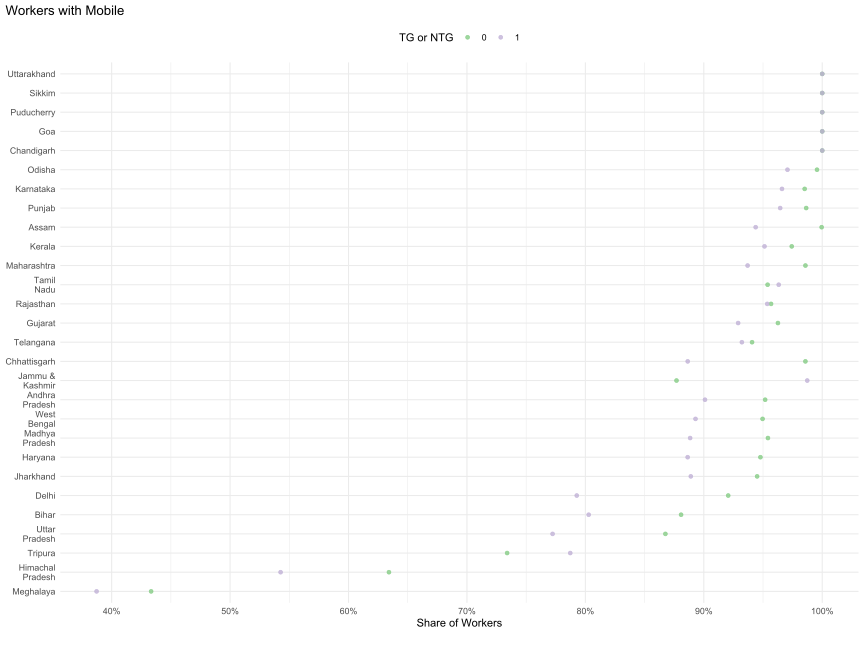
| STATE | NTG | TG |
|---|---|---|
| Jammu & Kashmir | 87.7% | 98.7% |
| Himachal Pradesh | 63.4% | 54.3% |
| Chandigarh | 100.0% | 100.0% |
| Punjab | 98.6% | 96.5% |
| Haryana | 94.8% | 88.6% |
| Delhi | 92.1% | 79.3% |
| Rajasthan | 95.7% | 95.4% |
| Uttar Pradesh | 86.8% | 77.2% |
| Uttarakhand | 100.0% | 100.0% |
| Gujarat | 96.3% | 92.9% |
| Maharashtra | 98.6% | 93.7% |
| Goa | 100.0% | 100.0% |
| Madhya Pradesh | 95.4% | 88.8% |
| Karnataka | 98.5% | 96.6% |
| Andhra Pradesh | 95.2% | 90.1% |
| Telangana | 94.1% | 93.2% |
| Tamil Nadu | 95.4% | 96.3% |
| Puducherry | 100.0% | 100.0% |
| Kerala | 97.4% | 95.1% |
| Assam | 100.0% | 94.4% |
| West Bengal | 95.0% | 89.3% |
| Bihar | 88.1% | 80.3% |
| Jharkhand | 94.5% | 88.9% |
| Odisha | 99.6% | 97.1% |
| Chhattisgarh | 98.6% | 88.6% |
| Sikkim | 100.0% | 100.0% |
| Tripura | 73.4% | 78.7% |
| Meghalaya | 43.3% | 38.7% |
Mobile and gender
| STATE | Female Workers in NTG | Male Workers in NTG | Male Workers in TG | Female Workers in TG |
|---|---|---|---|---|
| Jammu & Kashmir | 50.9% | 88.6% | 98.7% | - |
| Himachal Pradesh | 39.1% | 65.6% | 59.0% | 15.1% |
| Chandigarh | 100.0% | 100.0% | 100.0% | 100.0% |
| Punjab | 94.9% | 98.7% | 96.5% | 93.6% |
| Haryana | 88.8% | 95.0% | 88.8% | 84.5% |
| Delhi | 87.2% | 92.5% | 80.8% | 63.2% |
| Rajasthan | 81.2% | 95.8% | 95.5% | 86.9% |
| Uttar Pradesh | 74.2% | 87.3% | 78.4% | 49.7% |
| Uttarakhand | 100.0% | 100.0% | 100.0% | - |
| Gujarat | 68.1% | 98.2% | 95.5% | 73.0% |
| Maharashtra | 90.1% | 99.4% | 96.6% | 76.5% |
| Goa | 100.0% | 100.0% | 100.0% | 100.0% |
| Madhya Pradesh | 93.8% | 95.4% | 89.7% | 72.0% |
| Karnataka | 96.3% | 98.7% | 96.8% | 91.1% |
| Andhra Pradesh | 75.5% | 97.1% | 93.4% | 66.6% |
| Telangana | 54.9% | 99.2% | 99.0% | 67.8% |
| Tamil Nadu | 81.2% | 96.7% | 97.7% | 87.9% |
| Puducherry | 100.0% | 100.0% | 100.0% | 100.0% |
| Kerala | 99.4% | 97.3% | 95.8% | 79.9% |
| Assam | 100.0% | 99.9% | 96.9% | 83.0% |
| West Bengal | 85.8% | 96.0% | 93.5% | 67.6% |
| Bihar | 74.8% | 88.3% | 80.4% | 74.1% |
| Jharkhand | 100.0% | 94.4% | 88.8% | 94.9% |
| Odisha | 97.8% | 99.6% | 98.4% | 77.3% |
| Chhattisgarh | 89.4% | 99.0% | 93.8% | 54.1% |
| Sikkim | 100.0% | 100.0% | 100.0% | 100.0% |
| Tripura | 60.0% | 73.7% | 80.4% | 73.5% |
| Meghalaya | 36.4% | 47.4% | 38.5% | 39.2% |
Mobile and Caste Category
| STATE | Intermediate Caste Workers in NTG | Not Stated Workers in NTG | OBC Workers in NTG | SC Workers in NTG | Upper Caste Workers in NTG | Intermediate Caste Workers in TG | Not Stated Workers in TG | OBC Workers in TG | SC Workers in TG | Upper Caste Workers in TG | ST Workers in NTG | ST Workers in TG |
|---|---|---|---|---|---|---|---|---|---|---|---|---|
| Jammu & Kashmir | 85.8% | 98.7% | 90.1% | 61.5% | 79.1% | 100.0% | 99.1% | 100.0% | 100.0% | 94.1% | - | - |
| Himachal Pradesh | 0.0% | 0.0% | 82.8% | 72.2% | 60.9% | 0.0% | 0.0% | 82.8% | 40.2% | 70.2% | 0.0% | - |
| Chandigarh | 100.0% | 100.0% | 100.0% | 100.0% | 100.0% | 100.0% | 100.0% | 100.0% | 100.0% | 100.0% | 100.0% | 100.0% |
| Punjab | 99.1% | 100.0% | 99.2% | 98.4% | 98.2% | 100.0% | 100.0% | 99.2% | 95.0% | 99.1% | 100.0% | 100.0% |
| Haryana | 93.2% | 81.3% | 94.2% | 92.0% | 96.0% | 97.8% | 100.0% | 85.7% | 90.6% | 85.6% | 100.0% | 100.0% |
| Delhi | 89.7% | 80.0% | 83.5% | 94.4% | 93.5% | 100.0% | - | 73.8% | 77.3% | 85.8% | 100.0% | 100.0% |
| Rajasthan | 95.5% | 94.1% | 96.1% | 95.3% | 95.5% | 91.5% | 100.0% | 96.9% | 94.7% | 93.5% | 95.9% | 97.6% |
| Uttar Pradesh | 86.6% | 36.2% | 87.5% | 86.3% | 86.5% | 76.2% | 100.0% | 77.8% | 75.7% | 77.9% | 70.0% | 75.9% |
| Uttarakhand | 100.0% | - | 100.0% | 100.0% | 100.0% | - | - | 100.0% | - | 100.0% | 100.0% | - |
| Gujarat | 99.7% | 100.0% | 93.0% | 96.4% | 99.1% | 96.5% | 97.9% | 92.6% | 91.8% | 94.3% | 100.0% | 91.9% |
| Maharashtra | 98.3% | 98.7% | 98.1% | 99.1% | 99.4% | 96.0% | 97.0% | 95.1% | 91.2% | 94.0% | 95.9% | 89.0% |
| Goa | 100.0% | 100.0% | 100.0% | 100.0% | 100.0% | 100.0% | 100.0% | 100.0% | - | 100.0% | 100.0% | 100.0% |
| Madhya Pradesh | 94.5% | - | 94.9% | 91.7% | 96.9% | 91.9% | 50.0% | 89.9% | 86.0% | 93.6% | 98.8% | 82.7% |
| Karnataka | 98.1% | 100.0% | 98.4% | 98.3% | 99.0% | 95.2% | 100.0% | 96.6% | 98.4% | 95.0% | 99.8% | 97.1% |
| Andhra Pradesh | 95.0% | 100.0% | 95.8% | 93.2% | 95.1% | 92.7% | 100.0% | 89.6% | 86.0% | 94.3% | 100.0% | 90.3% |
| Telangana | 96.7% | 85.6% | 92.8% | 93.1% | 97.4% | 91.9% | - | 92.7% | 91.3% | 98.8% | 98.7% | 90.8% |
| Tamil Nadu | 92.5% | 96.7% | 95.5% | 96.6% | 93.8% | 92.5% | 99.3% | 96.6% | 95.7% | 100.0% | 89.5% | 100.0% |
| Puducherry | 100.0% | 100.0% | 100.0% | 100.0% | 100.0% | - | 100.0% | 100.0% | 100.0% | - | - | - |
| Kerala | 98.8% | 93.7% | 98.8% | 88.2% | 100.0% | 99.1% | 93.2% | 96.3% | 93.5% | 87.9% | 97.5% | 98.6% |
| Assam | - | - | 100.0% | 100.0% | 99.9% | - | 100.0% | 99.8% | 77.5% | 97.7% | 100.0% | 100.0% |
| West Bengal | - | 100.0% | 95.0% | 91.2% | 96.1% | - | 82.3% | 90.2% | 87.2% | 90.3% | 94.8% | 99.4% |
| Bihar | - | 100.0% | 86.7% | 83.7% | 91.4% | - | - | 79.6% | 78.2% | 88.3% | 100.0% | 100.0% |
| Jharkhand | 100.0% | - | 95.0% | 92.2% | 94.0% | - | - | 88.1% | 91.2% | 87.5% | 96.7% | 88.7% |
| Odisha | 98.8% | 100.0% | 99.5% | 100.0% | 100.0% | 98.5% | 100.0% | 97.6% | 94.7% | 98.3% | 100.0% | 96.5% |
| Chhattisgarh | 100.0% | - | 98.4% | 99.8% | 99.2% | 92.7% | 100.0% | 89.1% | 84.3% | 97.9% | 94.9% | 85.3% |
| Sikkim | - | - | 100.0% | 100.0% | 100.0% | - | - | 100.0% | 100.0% | 100.0% | 100.0% | 100.0% |
| Tripura | - | - | 95.5% | 15.1% | 100.0% | - | - | 75.0% | 75.0% | 88.9% | 66.7% | 54.5% |
| Meghalaya | 0.0% | - | 53.3% | 42.9% | 55.2% | - | 50.0% | 37.5% | 28.6% | 44.4% | 26.4% | 34.5% |